Redes de área local¶
Apuntes y organización del módulo 0225 — Redes de área local del CFGM de Sistemas Microinformáticos y Redes (SMR), conforme al Real Decreto 1691/2007, impartido en el IES Macià Abela de Crevillent.
Curso 2026-2027. En este sitio encontrarás la planificación del módulo y los temas que vayamos publicando a lo largo del curso.
Competencias profesionales¶
Las competencias profesionales asociadas al módulo:
- (d) Replantear el cableado y la electrónica de redes locales en pequeños entornos y su conexión con redes de área extensa canalizando a un nivel superior los supuestos que así lo requieran.
- (e) Instalar y configurar redes locales cableadas, inalámbricas o mixtas y su conexión a redes públicas, asegurando su funcionamiento en condiciones de calidad y seguridad.
- (f) Instalar, configurar y mantener servicios multiusuario, aplicaciones y dispositivos compartidos en un entorno de red local, atendiendo a las necesidades y requerimientos especificados.
- (g) Realizar las pruebas funcionales en sistemas microinformáticos y redes locales, localizando y diagnosticando disfunciones, para comprobar y ajustar su funcionamiento.
- (h) Mantener sistemas microinformáticos y redes locales, sustituyendo, actualizando y ajustando sus componentes, para asegurar el rendimiento del sistema en condiciones de calidad y seguridad.
Objetivos generales¶
- (d) Representar la posición de los equipos, líneas de transmisión y demás elementos de una red local, analizando la morfología, condiciones y características del despliegue, para replantear el cableado y la electrónica de la red.
- (e) Ubicar y fijar equipos, líneas, canalizaciones y demás elementos de una red local cableada, inalámbrica o mixta, aplicando procedimientos de montaje y protocolos de calidad y seguridad, para instalar y configurar redes locales.
- (f) Interconectar equipos informáticos, dispositivos de red local y de conexión con redes de área extensa, ejecutando los procedimientos para instalar y configurar redes locales.
- (g) Localizar y reparar averías y disfunciones en los componentes físicos y lógicos para mantener sistemas microinformáticos y redes locales.
- (h) Sustituir y ajustar componentes físicos y lógicos para mantener sistemas microinformáticos y redes locales.
Resultados de aprendizaje¶
| Código | Descripción | Peso (%) |
|---|---|---|
| RA1 | Reconoce la estructura de redes locales cableadas analizando las características de entornos de aplicación y describiendo la funcionalidad de sus componentes. | 20 |
| RA2 | Despliega el cableado de una red local interpretando especificaciones y aplicando técnicas de montaje. | 12 |
| RA3 | Interconecta equipos en redes locales cableadas describiendo estándares de cableado y aplicando técnicas de montaje de conectores. | 18 |
| RA4 | Instala equipos en red, describiendo sus prestaciones y aplicando técnicas de montaje. | 25 |
| RA5 | Mantiene una red local interpretando recomendaciones de los fabricantes de hardware o software y estableciendo la relación entre disfunciones y sus causas. | 15 |
| RA6 | Cumple las normas de prevención de riesgos laborales y de protección ambiental, identificando los riesgos asociados, las medidas y equipos para prevenirlos. | 10 |
Pesos en la nota
Los seis resultados de aprendizaje (RA) suman 100 %: 20 / 12 / 18 / 25 / 15 / 10. Cada RA aporta ese porcentaje a la nota final del módulo (ver Evaluación).
Carga horaria¶
Horas del módulo
| Concepto | Horas |
|---|---|
| Total módulo | 233 h |
| Formación en el centro | 186 h |
| Formación en empresa (FE) | 47 h |
El módulo son 233 h. El 80 % de cada resultado de aprendizaje se imparte en el centro (186 h) y el 20 % restante (47 h) queda vinculado a la formación en empresa. En esas 186 h veremos todos los contenidos del módulo, y dedicaremos más tiempo y práctica a los fundamentales.
Temas del curso¶
| Tema | Título | Qué trabajamos | Estado | RA principales |
|---|---|---|---|---|
| 1 | Introducción. Arquitectura de redes | Tipos de redes, componentes, topologías, modelos OSI y TCP/IP | Publicado | RA1 |
| 2 | Medios de transmisión y capa física | Par trenzado, fibra, Wi‑Fi básico y conectores | Publicado | RA2, RA3 |
| 3 | Cableado estructurado y componentes | Racks, paneles, electrónica de red, WLAN | Se publicará cuando toque | RA2, RA3, RA4 |
| 4 | Capa de enlace | Tramas, direcciones MAC, switches y dominios de colisión/difusión | Se publicará cuando toque | RA1, RA4 |
| 5 | Capa de red | IPv4, máscaras, CIDR, ARP, ICMP y DHCP | Se publicará cuando toque | RA1, RA4 |
| 6 | Enrutamiento, subnetting y VLANs | Subnetting, supernetting, rutas estáticas, VLANs | Se publicará cuando toque | RA3, RA4 |
| 7 | Capa de transporte | Puertos, TCP/UDP y herramientas básicas | Se publicará cuando toque | RA4, RA5 |
| 8 | NAT e IPv6 | Traducción de direcciones (NAT/PAT) e introducción a IPv6 | Se publicará cuando toque | RA4, RA5 |
| 9 | Servicios, diagnóstico y protección | Servicios de aplicación, diagnóstico de averías, protección y PRL | Se publicará cuando toque | RA5, RA6 |
Mapa tema × RA¶
| Temas | RA1 | RA2 | RA3 | RA4 | RA5 | RA6 |
|---|---|---|---|---|---|---|
| 1. Introducción. Arquitectura de redes | X | |||||
| 2. Medios y capa física | X | X | ||||
| 3. Cableado estructurado y componentes | X | X | X | |||
| 4. Capa de enlace | X | X | ||||
| 5. Capa de red | X | X | ||||
| 6. Enrutamiento, subnetting y VLANs | X | X | ||||
| 7. Capa de transporte | X | X | ||||
| 8. NAT e IPv6 | X | X | ||||
| 9. Servicios, diagnóstico y protección | X | X | ||||
| Peso | 20 % | 12 % | 18 % | 25 % | 15 % | 10 % |
timeline
title Planificación temporal — RAL 2026-27 (orientativa)
section 1ª Evaluación — sep–nov
Fundamentos : T1 Introducción y arquitectura : T2 Medios y capa física : T3 Cableado y WLAN
section 2ª Evaluación — nov–ene
Núcleo LAN : T4 Capa de enlace : T5 Capa de red : T6 Enrutamiento y VLAN
section 3ª Evaluación — ene–feb
Servicios y cierre : T7 Transporte : T8 NAT e IPv6 : T9 Diagnóstico y protecciónNúcleo del curso
Enlace, direccionamiento IP, subnetting y VLANs concentran una parte importante de la evaluación (sobre todo en la 2.ª evaluación). El Tema 9 cierra el curso en el centro con diagnóstico (RA5) y prevención de riesgos (RA6). Tenemos 7 sesiones por semana (55 minutos cada una).
Evaluación¶
La evaluación se organiza por resultados de aprendizaje (RA). Cada actividad indica qué RA trabaja. Los RA no se compensan entre sí: hay que superar cada uno.
Cómo se calcula la nota («quesitos»)¶
Imagina la nota del módulo como una tarta repartida en seis quesitos (los RA). Cada quesito tiene un tamaño fijo (el peso de la tabla de arriba: 20 %, 12 %, 18 %, 25 %, 15 % y 10 %).
- En cada RA, tu nota es la media ponderada de las actividades de ese RA (AC, PR, PY, PO).
- La nota final del módulo es la suma de (nota de cada RA × su peso).
- Si completas el apartado de certificación, puedes sumar hasta +1 punto sobre esa nota final, que puede llegar hasta 11. El punto tiene dos mitades: 0,5 por entregar las prácticas de Packet Tracer, hechas en casa, y superar la auditoría en clase; y 0,5 más si además apruebas un examen de certificación (cómo se acredita se concretará en Aules). Ese +1 no sustituye ningún RA.
flowchart TB
A["Paso 1 — Instrumentos\nAC · PR · PY · PO"]
B["Paso 2 — Nota de cada RA\nmedia de las actividades de ese RA"]
C["Paso 3 — Nota final del módulo\nRA1×20% + RA2×12% + RA3×18%\n+ RA4×25% + RA5×15% + RA6×10%"]
D["+1 Certificación\n0,5 prácticas + 0,5 examen\nhasta 11"]
A --> B --> C
D -.-> CEjemplo (simplificado): si en RA4 tienes prácticas y un examen, se promedian (según lo que se indique en Aules) y ese resultado cuenta un 25 % de la nota del módulo. Suspender un RA no se compensa con otro.
Peso de cada RA¶
pie showData
title Peso de cada RA en la nota del módulo
"RA1 — Estructura LAN" : 20
"RA2 — Despliegue cableado" : 12
"RA3 — Interconexión" : 18
"RA4 — Instalación equipos" : 25
"RA5 — Mantenimiento / diagnóstico" : 15
"RA6 — PRL y medio ambiente" : 10Instrumentos de evaluación (IE)¶
| Instrumento | Icono | Descripción | Escala |
|---|---|---|---|
| Actividad de clase | AC | Microevidencia de aula | 0–1 |
| Práctica | PR | Práctica de taller, laboratorio o investigación con exposición | 0–10 |
| Proyecto | PY | Entregable mayor con rúbrica | 0–30 |
| Prueba objetiva | PO | Examen escrito o en ordenador | 0–100 |
| Certificación | +1 | 0,5 por las prácticas de Packet Tracer entregadas y defendidas en la auditoría; 0,5 más por aprobar un examen de certificación | Hasta +1 en la nota final (hasta 11) |
Resumen:
- Las calificaciones se publican en Aules.
- Cada actividad indica el RA que evalúa y su escala. Codificación: prefijo del IE + número de tema (ej.
AC102= actividad 02 del Tema 1;PR101= práctica 01 del Tema 1). - Certificación y Packet Tracer: todas las prácticas de Packet Tracer del módulo (PR102, PR103, PR202, PR303 y las de temas posteriores) son trabajo para casa del apartado de certificación. No puntúan en la nota de los RA. Entregarlas y defenderlas en clase (auditoría oral breve o demo) da 0,5 del +1; el punto entero exige además aprobar un examen de certificación.
- Las entregas en Aules son obligatorias en Markdown (
.md). No se aceptan PDF.
Cómo empezar con Markdown y VS Code
- Guía de Markdown: tutorialmarkdown.com/guia
- Documentación de Visual Studio Code: code.visualstudio.com/docs
Materiales¶
- Este sitio web de apuntes.
- Normas del taller — lectura obligatoria.
- Aules (entregas en
.mdy calificaciones). - Diagramas: Excalidraw, draw.io (diagrams.net) o Dia.
- Simulación: Cisco Packet Tracer.
- Apartado de certificación (Packet Tracer en casa y preparación del CCNA).
- Editor de entregas: Visual Studio Code + Markdown.
- Herramientas y cableado del taller (Temas 2–3 y Tema 9).
Contenidos publicados¶
| Página | Contenido |
|---|---|
| Inicio | Planificación del módulo |
| Normas del taller | Normas de uso del taller |
| Tema 1 | Introducción. Arquitectura de redes |
| Tema 2 | Medios de transmisión y capa física |
Los Temas 1 y 2 ya están publicados. Los Temas 3–9 se irán publicando en la navegación cuando toque trabajarlos en clase.
Referencias¶
- Tutoriales de Pablo Hidalgo — vídeos de CCNA en español usados en los Temas 1 y 2.
Tema 1. Introducción. Arquitectura de redes¶
En este tema construimos el mapa que el resto del módulo da por sentado: qué es una LAN (Local Area Network, red de área local), qué dispositivos intervienen, por qué las comunicaciones se organizan en capas (OSI y TCP/IP) y cómo se cuentan los dominios de colisión y de difusión.
Primera clase
Empieza por el cuestionario inicial. No hace falta haber leído el tema entero: sirve para ver qué traes antes de estudiar. Entrégalo en Aules antes de mirar el Autocheck.
Cómo leerlo
Lee cada apartado completo: primero el párrafo (qué es y para qué sirve), luego la tabla o la figura, y al final los errores frecuentes. No estudies solo las tablas. Los términos marcados enlazan al glosario. Cuando acabes el tema, haz el Autocheck sin mirar las soluciones.
Propuesta didáctica¶
Trabajamos el RA1 del módulo Redes de área local (0225):
RA1. Reconoce la estructura de redes locales cableadas analizando las características de entornos de aplicación y describiendo la funcionalidad de sus componentes.
Criterios de evaluación (RA1)¶
- CE1a: Se han descrito los principios de funcionamiento de las redes locales.
- CE1b: Se han identificado los distintos tipos de redes.
- CE1c: Se han descrito los elementos de la red local y su función.
- CE1d: Se han identificado y clasificado los medios de transmisión.
- CE1e: Se ha reconocido el mapa físico de la red local.
- CE1f: Se han utilizado aplicaciones para representar el mapa físico de la red local.
- CE1g: Se han reconocido las distintas topologías de red.
- CE1h: Se han identificado estructuras alternativas.
Contenidos¶
- Sistemas en red: tipos, componentes y topologías.
- Clasificación por extensión (PAN, LAN, MAN, WAN) y por ámbito (pública / privada).
- Medios de transmisión (visión general) y perturbaciones habituales.
- Normalización: estándares y organismos.
- Arquitecturas por capas: modelo OSI y modelo TCP/IP; PDU y encapsulación.
- Uso del medio: dominios de colisión y de difusión.
Programación de aula (orientativa, ~18–20 h)¶
| Sesiones | Contenidos | Actividades |
|---|---|---|
| 1 | Presentación del módulo + normas del taller + cuestionario inicial | Cuestionario (1–7) |
| 2–3 | Componentes, tipos de redes, topologías | PR101 (diagrama: Excalidraw / draw.io / Dia) |
| 4 | Transmisión básica y perturbaciones | AC102 |
| 5–7 | Normalización, OSI / TCP-IP, encapsulación | AC103, AC104 |
| 8–9 | Dominios de colisión y difusión; primera red en PT | PR103; PR102 (opcional) |
Cuestionario inicial¶
Antes de empezar — responde con lo que sepas
- ¿Qué tipos de redes conoces según su extensión?
- ¿Qué diferencia hay entre una red pública y una privada?
- ¿Qué función tiene un switch en una red local?
- ¿Qué ventajas ofrece la fibra óptica frente al par trenzado?
- ¿Qué es una topología en estrella? ¿Dónde se suele usar?
- ¿Qué relación existe entre los nodos finales e intermedios?
- ¿Qué diferencia hay entre transmisión serie y paralela?
- ¿Qué es un modelo de red y para qué sirve?
- ¿Cuáles son las principales diferencias entre el modelo OSI y el modelo TCP/IP?
- ¿Qué diferencias hay entre conmutación y difusión en el uso del medio?
- ¿Qué es una DMZ y para qué se utiliza en una red local?
Entrega tus respuestas en Aules como tarea del cuestionario inicial antes de mirar el Autocheck del final del tema. Las soluciones no están aquí a propósito: primero entregas, después contrastas.
Sistemas en red¶
Un sistema de red es el conjunto de equipos y medios de transmisión que permiten comunicar terminales, a menudo en puntos distintos. Cuando varios sistemas se unen, formamos las redes de comunicaciones que usas cada día: el aula, el centro, Internet.
Para qué sirve esta idea. Si no separas emisor, receptor, medio y reglas (protocolos), parece que «la red» es magia. En el taller y en el examen te pedirán nombrar cada pieza y decir qué hace.
Ejemplo. En el aula, tu PC (emisor) envía una petición web; el cable o el Wi‑Fi es el medio; el switch y el router del centro ayudan a llegar al servidor; el navegador y el sistema operativo aplican los protocolos.
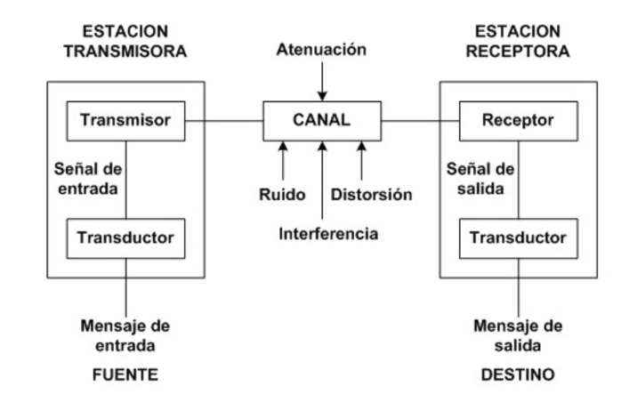
Componentes hardware¶
Nodos finales (DTE)¶
Los nodos finales o DTE (Data Terminal Equipment, equipo terminal de datos) inician o terminan la comunicación: estaciones de trabajo, servidores, impresoras de red, cámaras IP, etc. Son «los que quieren hablar». En casa, tu portátil y la Smart TV son nodos finales; en el instituto, cada PC del aula y el servidor de impresión también.
Nodos intermedios¶
Los nodos intermedios participan en el camino entre extremos: no sustituyen al PC; ayudan a que el tráfico llegue. Sin ellos, solo tendrías cables punto a punto entre dos equipos. En sentido estricto, DCE (Data Circuit-terminating Equipment) es el equipo que termina el circuito de datos (módem, CSU/DSU). En el CCNA y en clase usamos sobre todo «dispositivos intermediarios» (switch, router, AP…) para lo que va entre nodos finales.
| Dispositivo | Qué hace | Capa OSI habitual |
|---|---|---|
| Repetidor | Regenera la señal y la reenvía; no divide el dominio de colisión | 1 (física) |
| Hub | Reparte la señal a todos los puertos (un solo dominio de colisión). Hoy solo se usa en laboratorio | 1 (física) |
| Switch | Conecta equipos en la misma LAN; aprende MAC ↔ puerto | 2 (enlace) |
| Router | Conecta redes distintas; elige camino (encaminamiento) | 3 (red) |
| Firewall | Filtra tráfico según políticas de seguridad | varias |
| Punto de acceso (AP) | Amplía la red cableada con acceso Wi‑Fi; se alimenta por PoE o por la red eléctrica | 1–2 |
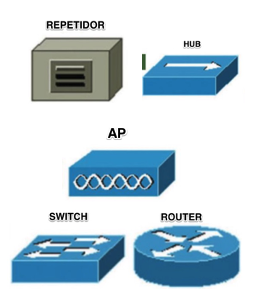
Errores frecuentes
Confundir switch y router es el error más típico de examen. El switch une equipos de la misma red local. El router une redes distintas (por ejemplo, el aula con Internet) y trabaja con direcciones IP. El hub casi no se usa hoy; lo estudiaremos al contar dominios de colisión.
Adaptador de red (NIC)¶
La NIC (Network Interface Card, tarjeta de red) conecta el equipo al medio. Puede ir integrada en la placa o ser un módulo USB/PCIe. Trabaja en las capas 1 y 2: bits en el medio y tramas con dirección MAC. La mayoría de NIC cableadas en el aula son Ethernet. Se caracteriza por el tipo de interfaz (cobre, fibra, Wi‑Fi), el modo (half-dúplex o full-dúplex) y la velocidad (Mbps / Gbps).
Toda NIC (también la Wi‑Fi) tiene una dirección MAC de 48 bits, escrita como 12 dígitos hexadecimales (por ejemplo 00:1A:2B:3C:4D:5E). Los primeros 24 bits son el OUI del fabricante (Organizationally Unique Identifier); el resto identifica la tarjeta concreta.
Ejemplo de aula. El PC del taller tiene NIC Ethernet a 1 Gbps en full-dúplex hacia el switch; el portátil usa la NIC Wi‑Fi hacia el AP del pasillo. Las dos tienen MAC; cambian el medio, no el papel: sacar y meter tramas del equipo.
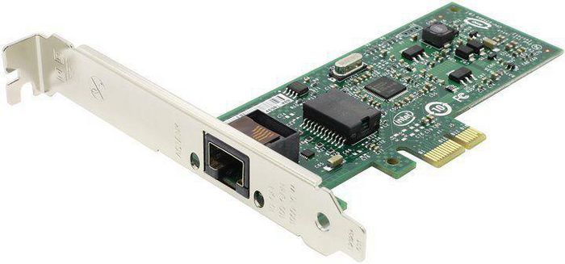
Medios de transmisión (visión general)¶
El medio es por donde viaja la señal. En LAN trabajamos sobre todo con medios guiados (par trenzado, fibra) y, para acceso, con no guiados (Wi‑Fi). El detalle de categorías, conectores y crimpado está en el Tema 2.
| Tipo | Ejemplos | Uso típico en LAN |
|---|---|---|
| Guiados | Par trenzado (UTP/FTP), fibra óptica, coaxial | Cableado de edificio; backbone |
| No guiados | Wi‑Fi, radioenlaces | Acceso inalámbrico en aulas / oficinas |
Componentes software¶
Además del hardware hace falta software: la pila de protocolos del sistema operativo, los drivers de la NIC y los servicios (DHCP, DNS, servidor web…). Sin ese software, el cable solo transporta señal sin sentido.
¿Qué es un protocolo?
Conjunto de reglas entre emisor y receptor que permiten transmitir datos de forma acordada. Ejemplo: el protocolo IP define el direccionamiento lógico.
Clasificación de redes¶
Según su extensión¶
Clasificar por alcance geográfico ayuda a situar dónde trabaja cada tecnología y qué dispositivos predominan. Una PAN (Personal Area Network) cubre el entorno personal, apenas unos metros: Bluetooth entre el móvil y los auriculares, o NFC al pagar con el teléfono. Una LAN (Local Area Network) es la red local de un aula, un piso o un edificio; si el acceso es inalámbrico hablamos de WLAN. En el instituto, la red del taller y la de Administración son LAN (o partes de la misma LAN segmentada). Una MAN (Metropolitan Area Network) une varias LAN en ámbito de ciudad o de un campus grande: varios edificios del centro conectados por fibra del operador o del propio campus. Una WAN (Wide Area Network) conecta a gran distancia; Internet es el ejemplo más conocido, y también el enlace del instituto hacia el proveedor de Internet.
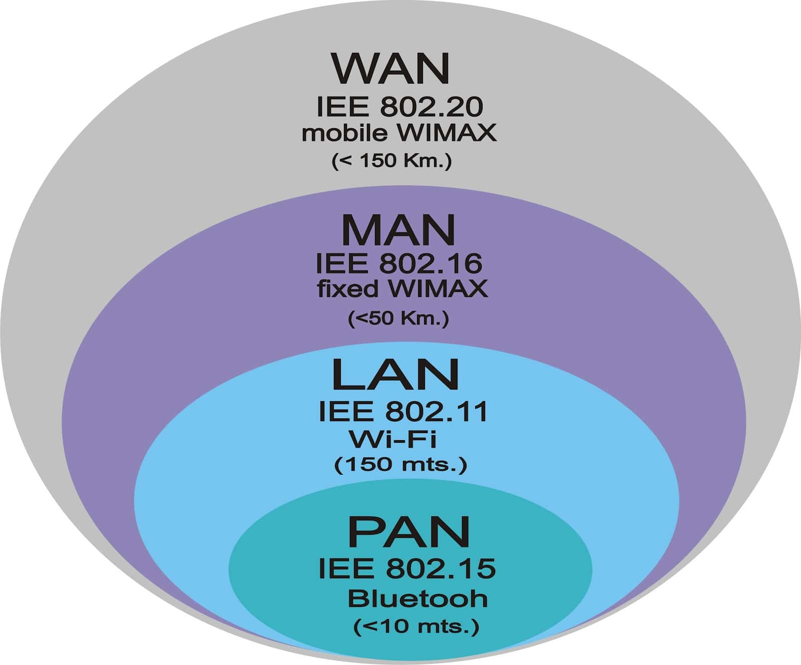
Errores frecuentes
Llamar «WAN» a la Wi‑Fi del aula. Wi‑Fi en el aula es acceso a una LAN/WLAN, no una WAN. La WAN empieza cuando sales del edificio hacia redes lejanas (o Internet).
Según su ámbito (titularidad)¶
Según quién controla la red: las públicas las ofrece un operador (ISP) a quien contrata; las privadas pertenecen a una organización o particular. El cableado del instituto es privado; la fibra del operador hacia Internet es un servicio público contratado.
Una VPN (Virtual Private Network, red privada virtual) permite extender de forma segura una red privada sobre otra no controlada (por ejemplo, Internet): el tráfico viaja cifrado como si estuvieras en la LAN de la empresa. Ejemplo: un profesor se conecta desde casa a los recursos internos del centro mediante VPN.
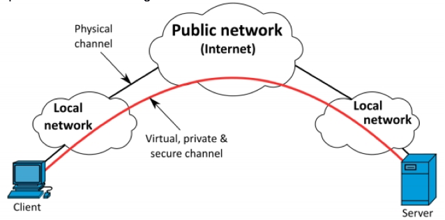
Topologías¶
La topología describe cómo se disponen y conectan los nodos: el «mapa» físico o lógico de la red. Elegir topología afecta al coste, a la tolerancia a fallos y a lo fácil que sea ampliar.
Cableadas¶
Estrella. Todos los puestos llegan a un punto central (casi siempre un switch). Ventaja: si falla un cable, solo cae ese puesto. Inconveniente: si cae el switch central, cae el segmento entero. Ejemplo real: el aula de informática con un switch en el armario y un latiguillo a cada mesa.
Árbol o estrella extendida. Varios switches en cascada o jerarquía (armario de planta → armario principal). Ventaja: escala a un edificio. Inconveniente: hay que diseñar bien los uplinks. Ejemplo: varias aulas del instituto colgando de switches de planta que suben al rack del CPD.
Bus (histórico). Un solo cable compartido; en los extremos se colocan terminadores para evitar reflexiones de la señal. Ventaja: poco cable en su día. Inconveniente: una rotura afecta a muchos; muchas colisiones. Hoy está en desuso en Ethernet moderno.
Anillo (histórico / contextos específicos). Cada equipo tiene dos vecinos. Ventaja: a veces hay caminos alternativos. Inconveniente: más complejo de cablear en oficinas. En LAN Ethernet de aula casi no lo verás.
Malla. Cada nodo se conecta a varios (o a todos) los demás. En malla completa hay enlace entre cada par de nodos; en malla parcial, solo entre algunos. Ventaja: redundancia (si cae un enlace, hay camino alternativo). Inconveniente: más cable y más coste. En WAN y en redes críticas se usa la idea de malla; en el aula cableada lo habitual sigue siendo estrella o árbol.
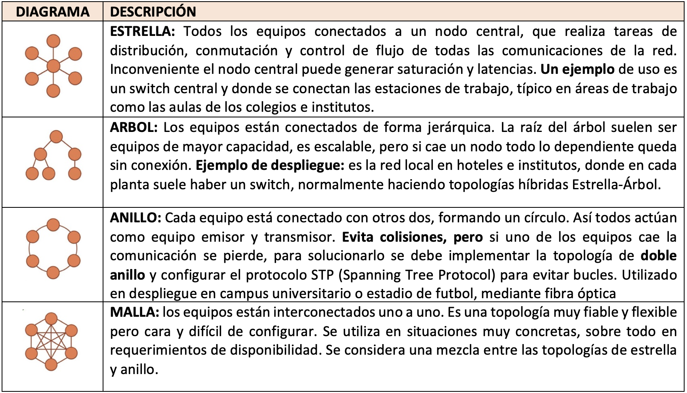
Errores frecuentes
Dibujar una estrella sin dispositivo central no es estrella: hace falta el switch (o hub). En examen, si te piden la topología de un aula con un armario y un switch, la respuesta es estrella (o estrella extendida / árbol si hay varios switches).
Inalámbricas¶
En Wi‑Fi lo más frecuente es una estrella inalámbrica: los clientes se asocian a un punto de acceso que enlaza con la LAN cableada. Ventaja: movilidad. Inconveniente: el aire se comparte e interfiere. También existen despliegues en malla (mesh) entre APs para cubrir zonas grandes.
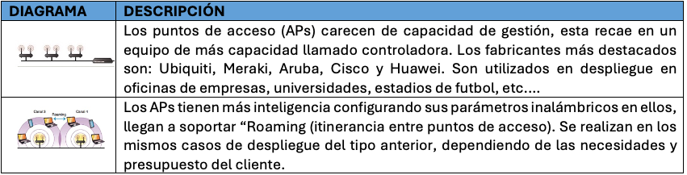
Transmisión y perturbaciones¶
Transmitir es enviar datos de un punto a otro por un medio. Una perturbación es cualquier interferencia o degradación que altera la señal y puede corromper los bits. En el Tema 2 verás cómo el cable y la categoría mitigan parte de estos problemas; aquí te quedas con el vocabulario.
Ideas que debes manejar¶
La señal puede ser analógica (valores continuos, como la voz en telefonía clásica) o digital (niveles discretos, como Ethernet). Los bits pueden ir en serie (uno tras otro; Ethernet y USB) o en paralelo (varios a la vez; buses antiguos de placa). Según el sentido del flujo: símplex (solo un sentido, como una emisora de radio), half-dúplex (los dos sentidos, pero no a la vez: un walkie-talkie) o full-dúplex (los dos a la vez: una llamada telefónica o un enlace PC–switch moderno).
| Criterio | Opciones | Ejemplo |
|---|---|---|
| Naturaleza de la señal | Analógica / digital | Voz telefónica clásica vs Ethernet |
| Cómo viajan los bits | Serie / paralelo | USB o Ethernet (serie) vs buses antiguos |
| Dirección | Símplex / half-dúplex / full-dúplex | Emisora de TV; walkie-talkie; llamada telefónica |
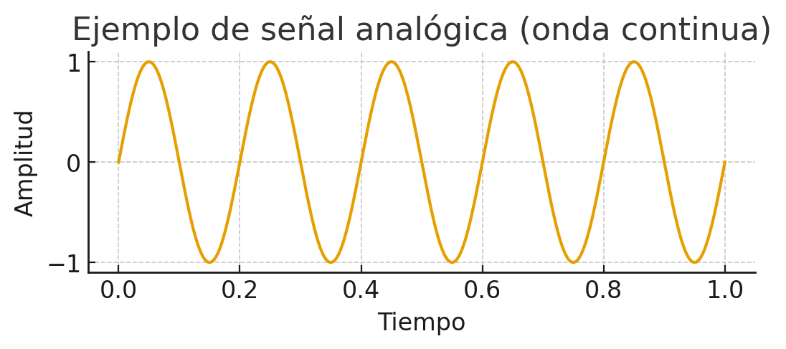
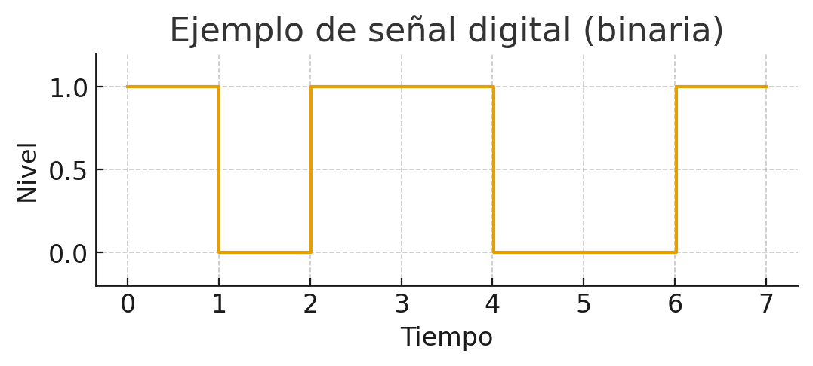
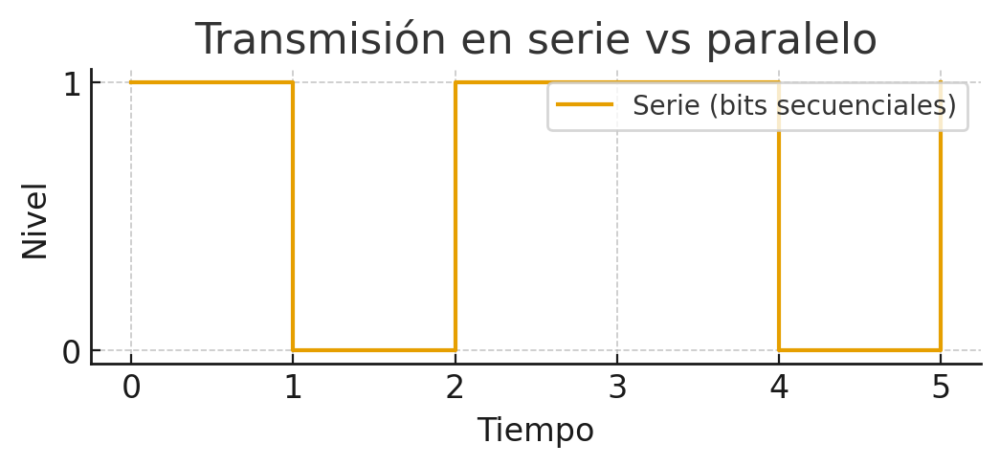
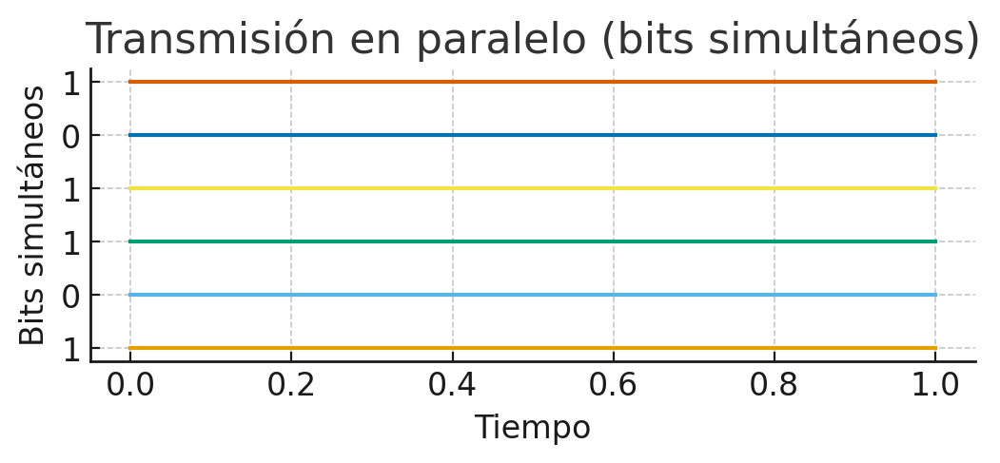
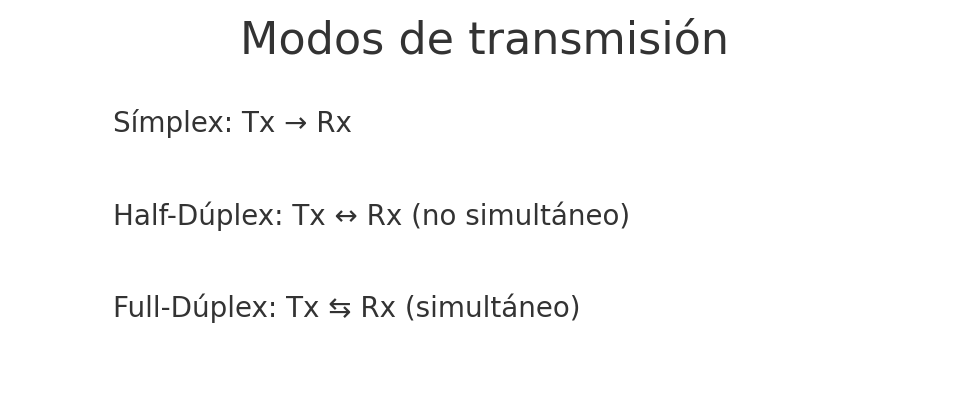
Perturbaciones habituales¶
Atenuación. La señal pierde potencia con la distancia. Ejemplo: un latiguillo UTP de 3 m llega fuerte; un tendido mal hecho cerca del límite de 100 m puede fallar a 1 Gbps.
Ruido. Señales no deseadas (térmico, impulsivo…). Ejemplo: un motor del taller cerca de un cable sin apantallar induce picos que el receptor malinterpreta como bits.
Diafonía (crosstalk). Un par «habla» con el vecino dentro del mismo cable. Por eso el cable va trenzado: el trenzado reduce la diafonía. Ejemplo: categorías altas (Cat. 6a) mejoran el control de diafonía para 10 Gbps.
Distorsión. La forma de la onda se deforma y cuesta leer los bits. Suele aparecer combinada con atenuación y ruido en tendidos largos o de mala calidad.
Errores frecuentes
No digas que «el ruido es atenuación». Son cosas distintas: la atenuación debilita la señal útil; el ruido añade señal basura. En examen suelen pedir un ejemplo de cada una.
Fuera de alcance en este tema
Técnicas de codificación (NRZ, Manchester…) y modulación detallada (AM/FM/PM) no se desarrollan aquí; si hace falta, se retomarán como ampliación o en laboratorio.
Normalización¶
Al principio cada fabricante tenía su forma de cablear y de hablar en red. El resultado era la incompatibilidad. La solución fue estandarizar: acordar normas comunes de cableado, tramas, direcciones y protocolos.
Un estándar es un documento técnico consensuado que define cómo debe hacerse algo para que productos distintos interoperen. En redes el color del par naranja lo marca la norma, no cada fabricante por su cuenta. Ejemplo: un switch de una marca y un PC de otra se entienden porque ambos siguen Ethernet (IEEE 802.3) e IP (RFC de la IETF).
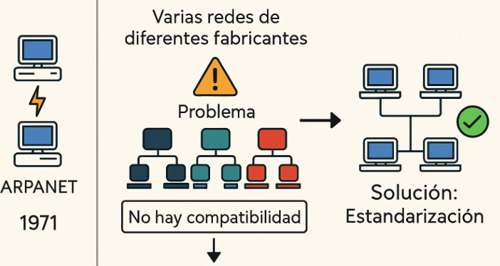
Organismos¶
ISO (International Organization for Standardization) publica normas internacionales. En redes, el modelo OSI (ISO/IEC 7498) es su referencia más citada en clase: siete capas para describir la comunicación.
IEEE (Institute of Electrical and Electronics Engineers) publica la familia 802. Ejemplos: 802.3 (Ethernet) y 802.11 (Wi‑Fi). Cuando crimpas un RJ‑45 o configuras un AP, estás aplicando normas IEEE (y TIA/EIA en el orden de colores).
ITU (International Telecommunication Union) coordina a escala mundial aspectos de telecomunicaciones (radioespectro, recomendaciones de operadores…). En SMR aparece cuando hablamos de espectro y de servicios de telecomunicación.
IETF (Internet Engineering Task Force) desarrolla los protocolos de Internet en documentos RFC (Request for Comments). TCP, IP, HTTP, DNS… nacen o se actualizan ahí. Es el organismo «de Internet» frente al modelo de referencia de ISO.
Errores frecuentes
Mezclar papeles: IEEE 802.3 es Ethernet, no «el modelo OSI». El modelo de siete capas es de ISO. Los protocolos de Internet (IP, TCP…) los documenta sobre todo la IETF.
Arquitecturas por capas¶
Diseñar una red implica resolver a la vez el medio físico, el acceso al cable, el direccionamiento, el transporte fiable y las aplicaciones. Si todo fuera un solo bloque monolítico, cambiar un detalle rompería el resto. La solución práctica es dividir el problema en capas: cada una ofrece servicios a la superior y usa los de la inferior.
Principios¶
Cada capa se apoya en los servicios de la de abajo. Las capas homólogas de dos equipos se entienden mediante protocolos. Si mantienes los servicios que una capa ofrece hacia arriba, puedes cambiar el protocolo interno sin reescribir toda la pila. Eso permite que Ethernet pase de 100 Mbps a 1 Gbps sin cambiar HTTP.
PDU y encapsulación¶
La PDU (Protocol Data Unit, unidad de datos de protocolo) es el «paquete» que maneja una capa concreta. No es lo mismo un segmento TCP que una trama Ethernet.
Ejemplo paso a paso: abrir una web. Escribes https://www.ejemplo.edu en el navegador. La capa de aplicación genera los datos HTTP. La de transporte (TCP) añade puertos y forma un segmento. La de red (IP) añade direcciones IP y forma un paquete. La de enlace (Ethernet o Wi‑Fi) añade MAC origen/destino y forma una trama. En el medio viajan bits. En el servidor ocurre lo contrario (desencapsulación): se quitan cabeceras de abajo arriba hasta llegar a la aplicación web.
| Capa (emisor) | Qué añade | PDU resultante | Dirección o puerto |
|---|---|---|---|
| Aplicación | Datos de la app (p. ej. HTTP) | Datos | — |
| Transporte | Cabecera TCP o UDP | Segmento / datagrama | Puertos origen y destino |
| Red (IP) | Cabecera IP | Paquete | IP origen y destino |
| Enlace | Cabecera (y cola) Ethernet/Wi‑Fi | Trama | MAC origen y destino |
| Física | Codifica en señal | Bits | — (medio) |
Camino inverso (receptor). Física → bits; enlace → quita MAC y entrega el paquete; red → quita IP y entrega el segmento; transporte → quita puertos y entrega los datos a la aplicación.
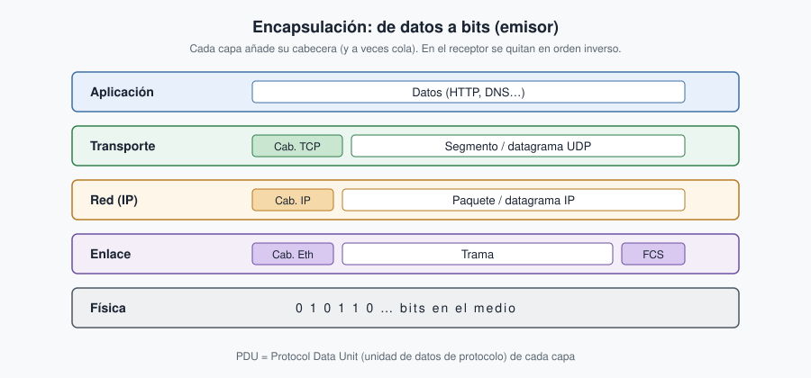
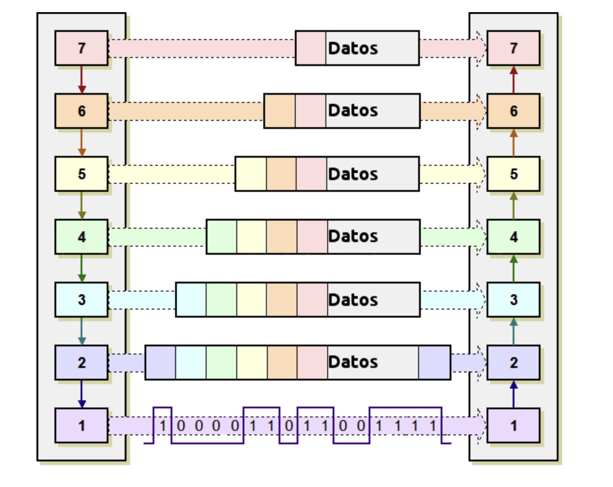
Errores frecuentes
Decir «el paquete de la capa 2» suele ser incorrecto: en capa 2 hablamos de trama; el paquete es de capa 3 (IP). En capa 4, con TCP, hablamos de segmento.
Modelo OSI y modelo TCP/IP¶
El modelo OSI (Open Systems Interconnection) divide la comunicación en siete capas. Es sobre todo un modelo de referencia para estudiar y comparar. El modelo TCP/IP tiene cuatro capas y describe la pila real de Internet. En clase usamos OSI para situar conceptos y TCP/IP para lo que realmente configuras y capturas.
Capas del modelo OSI (de abajo arriba)¶
Capa 1 — Física. Define el medio, los conectores, los niveles eléctricos u ópticos y cómo se representan los bits. Dispositivos: repetidores, hubs, cables, SFP. PDU: bits. Ejemplo: el latiguillo UTP entre tu PC y el switch.
Capa 2 — Enlace de datos. Organiza los bits en tramas, identifica equipos en la LAN con direcciones MAC y gestiona el acceso al medio. Dispositivo estrella: switch. Protocolos: Ethernet, Wi‑Fi (parte de enlace). PDU: trama.
Capa 3 — Red. Direccionamiento lógico y encaminamiento entre redes. Protocolo clave: IP. Dispositivo: router. PDU: paquete.
Capa 4 — Transporte. Comunicación extremo a extremo entre procesos. Aparecen los puertos (80/443 en web). PDU: segmento (TCP) o datagrama (UDP).
- TCP es fiable: confirma la recepción, retransmite si falta algo y controla el flujo para no saturar al receptor. Ejemplo: descargar un PDF o cargar una página web (HTTP/HTTPS sobre TCP).
- UDP es ligero: no garantiza entrega ni orden; menos overhead. Ejemplo: una consulta DNS o un stream de vídeo donde preferimos no esperar retransmisiones.
Capa 5 — Sesión. Gestiona el diálogo entre aplicaciones (establecer, mantener, cerrar). En TCP/IP se diluye en la capa de aplicación.
Capa 6 — Presentación. Formato, compresión, cifrado a nivel conceptual. Tampoco tiene un único protocolo que configures en el aula como IP.
Capa 7 — Aplicación. Servicios al usuario: HTTP/HTTPS, DNS, SMTP, DHCP, FTP… Es la capa del navegador y del cliente de correo.
Modelo TCP/IP (4 capas)¶
- Acceso a la red ≈ física + enlace OSI (Ethernet, Wi‑Fi…).
- Internet ≈ red OSI (IP, ICMP).
- Transporte (TCP, UDP).
- Aplicación ≈ sesión + presentación + aplicación OSI.
| Capa TCP/IP | Capas OSI | Función | Ejemplo |
|---|---|---|---|
| Aplicación | 5–7 | Servicios al usuario | HTTP, DNS, DHCP |
| Transporte | 4 | Comunicación extremo a extremo | TCP, UDP |
| Internet | 3 | Encaminamiento y direccionamiento | IP, ICMP |
| Acceso a la red | 1–2 | Medio físico y tramas | Ethernet, Wi‑Fi |
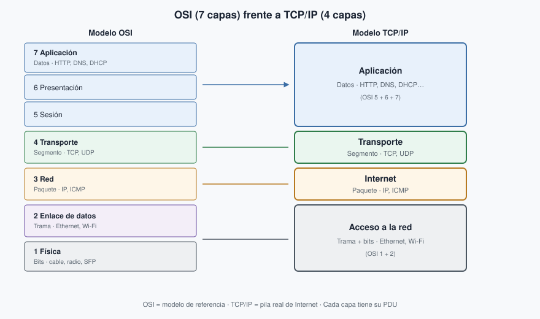
Errores frecuentes
Decir que «OSI es lo que usa Internet» es falso: Internet usa TCP/IP. OSI sirve para explicar. Tampoco digas que el switch «trabaja en capa 3» en el caso general: el switch Ethernet habitual es de capa 2.
Uso del medio: dominios de colisión y de difusión¶
Difusión frente a conmutación¶
En un medio compartido clásico (bus o hub) varios equipos pueden interferirse al transmitir a la vez. Con conmutación, el switch aprende en qué puerto está cada MAC y envía la trama solo hacia el destino (salvo las difusiones y las direcciones aún desconocidas). Por eso en las LAN modernas casi todo pasa por switches y no por hubs.
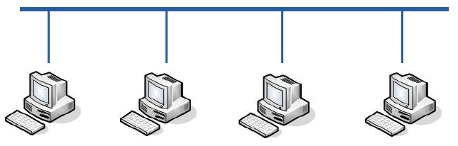
Dominio de colisión¶
Una colisión ocurre cuando dos equipos transmiten a la vez en el mismo medio compartido y las señales se pisan. El dominio de colisión es el conjunto de interfaces que comparten ese riesgo: si dos de ellas transmiten a la vez en half-dúplex, hay colisión.
El hub (capa 1) reparte la señal eléctrica a todos los puertos: todo el hub es un solo dominio de colisión. Trabaja en half-dúplex y usa CSMA/CD (Carrier Sense Multiple Access with Collision Detection): escuchar, transmitir y, si hay colisión, esperar un tiempo aleatorio y reintentar. Hoy el hub está en desuso, pero el examen CCNA aún lo pregunta.
Cada puerto de un switch (en full-dúplex) es un dominio de colisión separado. En la práctica, en full-dúplex PC–switch no hay colisión en ese enlace: cada uno tiene su canal de ida y de vuelta. Por eso decimos que el switch «rompe» o segmenta los dominios de colisión.
Dominio de difusión¶
Una difusión (broadcast) es una trama dirigida a todos los equipos del segmento. En Ethernet la dirección MAC de difusión es FF:FF:FF:FF:FF:FF. Ejemplos que verás pronto: una petición ARP («¿quién tiene esta IP?») o un DHCP Discover («¿hay algún servidor DHCP?»).
El dominio de difusión es el conjunto de interfaces que reciben esas tramas de broadcast. El switch reenvía las difusiones por todos sus puertos (menos el de entrada). El router no las deja pasar de una interfaz a otra: cada interfaz del router abre un dominio de difusión distinto. Por eso segmentar con routers (o más adelante con VLAN) reduce el «ruido» de broadcasts.
Un AP Wi‑Fi, para los clientes asociados a un mismo SSID en el mismo segmento, se comporta como un medio compartido: los clientes comparten el aire (acceso con CSMA/CA).
| Dispositivo | Capa habitual | Dominios de colisión | Dominios de difusión | Analogía breve |
|---|---|---|---|---|
| Hub | 1 | 1 para todos los puertos (y el puerto del switch al que se conecte) | 1 (no corta broadcasts) | Megáfono en el pasillo: todos oyen a la vez |
| Switch | 2 | 1 por puerto (enlace), salvo el puerto unido a un hub | 1 para todo el switch (salvo VLAN) | Cartero que sabe en qué puerta vive cada MAC |
| Router | 3 | 1 por interfaz | 1 por interfaz (corta broadcasts) | Frontera entre barrios: el broadcast no cruza |
| AP Wi‑Fi | 1–2 | Medio compartido en el aire (por SSID/segmento) | Suele pertenecer al dominio de difusión de la LAN a la que está puenteado | Altavoz Wi‑Fi enchufado a la LAN cableada |
Regla práctica para contar. Dominios de colisión: cuenta cada enlace a un puerto de switch como un dominio salvo cuando ese puerto está unido a un hub: entonces el puerto del switch, el hub y todos los equipos del hub forman un solo dominio de colisión (no cuentes el enlace hub–switch aparte). Dominios de difusión: cuenta cada «isla» separada por un router (cada interfaz del router). Las VLAN también separan dominios de difusión; las verás con detalle más adelante.
Para la certificación CCNA
En Ethernet full‑dúplex PC–switch no se usa CSMA/CD: cada sentido tiene su canal y no hay colisión en ese enlace. CSMA/CD pertenece al Ethernet clásico en half‑dúplex (hub/bus).
Ejemplos resueltos¶
a) Cuatro PC en un hub. Todo el hub es un solo dominio de colisión y un solo dominio de difusión.
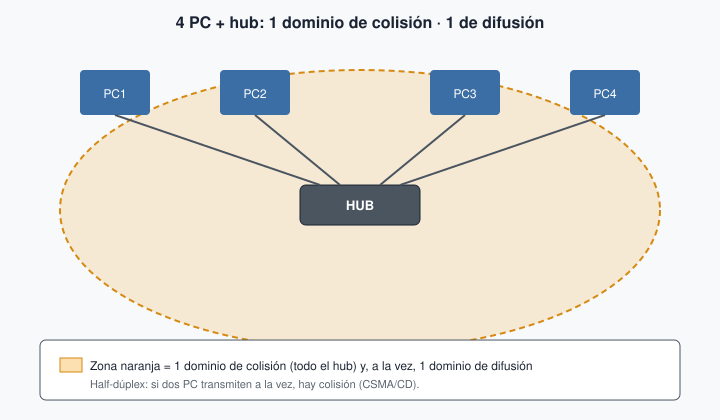
b) Cuatro PC en un switch. Hay 4 dominios de colisión (un enlace por PC) y 1 dominio de difusión (el switch no corta broadcasts).
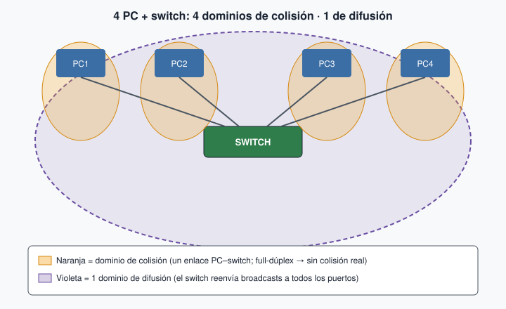
c) Topología mixta. Un router con dos interfaces. A la interfaz 1: un switch (SW1) con tres PC y, colgando de SW1, un hub con dos PC. A la interfaz 2: un switch (SW2) con dos PC.
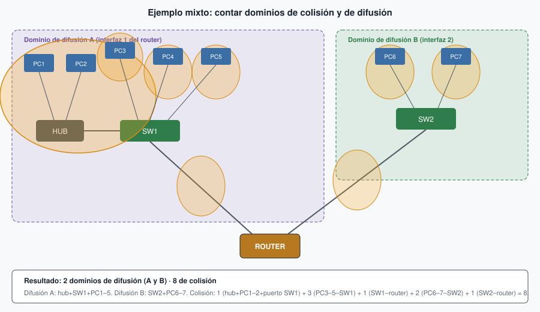
Razonamiento. Difusión: la interfaz 1 del router agrupa hub + SW1 + PC1–PC5 → dominio A; la interfaz 2 agrupa SW2 + PC6–PC7 → dominio B. Son 2 dominios de difusión. Colisión: (hub + PC1 + PC2 + puerto de SW1) = 1; PC3–PC5 = 3; SW1–router = 1; PC6–PC7 = 2; SW2–router = 1. Total: 8 dominios de colisión.
d) Hub, repetidor y switch. Tres PC en un hub; entre el hub y un switch hay un repetidor; del switch salen dos PC más y un enlace al router (una sola interfaz). El repetidor regenera la señal pero no abre un dominio de colisión nuevo: hub + tres PC + repetidor + puerto del switch = 1 dominio de colisión. Los dos PC del switch son 2 más; el enlace switch–router es 1. Colisión: 4. Difusión: 1 (todo cuelga de la misma interfaz del router).
Errores frecuentes
Contar el enlace hub–switch como un dominio de colisión aparte (incorrecto: ese puerto del switch entra en el mismo dominio que el hub). Olvidar el enlace switch–router. Pensar que el switch separa difusiones (no: eso lo hace el router, o las VLAN). Contar el hub como «un dominio por puerto».
Ejercicios propuestos¶
Ejercicio 1. Observa esta topología (sin colorear) y responde: ¿cuántos dominios de colisión y de difusión hay?
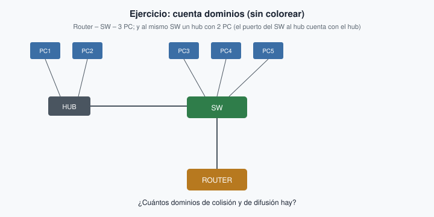
Ejercicio 2. Un router tiene tres interfaces. En cada una hay un switch con cuatro PC. ¿Cuántos dominios de difusión hay? ¿Y de colisión? (No hace falta dibujar: razona con la regla práctica.)
Las soluciones de los dos ejercicios están solo en el Autocheck, dentro del bloque de soluciones.
Actividades¶
Formato de entrega
Las entregas en Aules son obligatorias en Markdown (.md). No se aceptan PDF.
Nombre del archivo: AC1XX.md o PR1XX.md (sustituye XX por el número). Respeta la fecha de vencimiento.
Escribiremos los .md con Visual Studio Code.
Cómo empezar
- Guía de Markdown: tutorialmarkdown.com/guia
- Documentación de Visual Studio Code: code.visualstudio.com/docs
PR101 — Mapa físico y lógico¶
-
PR101. (RA1 // CE1b, CE1c, CE1e, CE1f, CE1g, CE1h // PR 0–10). En grupo, diseñad el esquema de la empresa ficticia TechSolutions:
-
3 departamentos (Administración, Ventas, Soporte), cada uno con 5 PCs y 1 impresora.
- 1 servidor central.
- Conexión a Internet mediante router.
Tareas: elegir topología; dibujar el mapa en Excalidraw, draw.io o Dia (cualquiera de las tres); etiquetar medios (UTP, fibra, Wi‑Fi); justificar topología, medios y dispositivos; exposición breve (5 min).
Entrega: el diagrama (export PNG/SVG o el archivo del editor, según se indique en Aules) y el .md de la práctica (PR101.md).
| Criterio | Descripción | Puntos |
|---|---|---|
| Claridad del diagrama | Legible y organizado | 0–2 |
| Dispositivos | Todos los necesarios | 0–2 |
| Conexiones | Etiquetadas (UTP / fibra / Wi‑Fi) | 0–2 |
| Topología adecuada | Coherente con el escenario | 0–2 |
| Justificación técnica | Argumentación clara | 0–2 |
| Total | /10 |
AC102 — Transmisión y perturbaciones¶
- AC102. (RA1 // CE1a, CE1c, CE1d // AC 0–1). Busca ejemplos reales de: serie/paralelo, símplex/half/full-dúplex, y al menos dos perturbaciones. Para cada uno: dónde aparece, qué efecto tiene y qué solución se aplica o propondrías.
AC103 — Organismos de normalización¶
- AC103. (RA1 // CE1a, CE1c // AC 0–1). Tabla comparativa de organismos (ISO, IEEE, ITU, IETF…): función y algún estándar relevante.
AC104 — OSI vs TCP/IP¶
- AC104. (RA1 // CE1a, CE1g // AC 0–1). Esquema comparativo OSI / TCP-IP: capas, equivalencia, función y un ejemplo de protocolo por capa TCP/IP.
PR102 — Modelos en Packet Tracer¶
- PR102. (RA1 // CE1a, CE1c // Opcional · suma en el +1). En Packet Tracer, observad la encapsulación de una petición web (HTTP / TCP / IP / Ethernet) y el papel de DNS (y ARP si aparece). Es voluntaria y va más allá de lo que vemos en este tema: puertos, DNS, ARP y TCP se ven a fondo en temas posteriores. Suma para el +1 de la nota final solo si la defiendes en una auditoría oral cuando el profesor lo indique.
Antes: instalad PT con la guía inicial.
Guion: PR102 — Modelos OSI/TCP (también en Aules). Usa la topología .pkt de Aules o monta la mini-LAN del guion.
Entrega: PR102.md + capturas (simulación / PDU). Opcional: .pkt.
| Criterio | Descripción | Puntos |
|---|---|---|
| Simulación y filtros | Modo simulación; HTTP (y DNS/TCP) visibles | 0–2 |
| Lectura OSI / TCP-IP | Tabla capa ↔ qué viste en la PDU | 0–3 |
| Preguntas de repaso | Puerto HTTP, DNS, intercambio en la respuesta | 0–3 |
Claridad del .md |
Capturas con leyenda; sin datos personales | 0–2 |
| Total | /10 |
La rúbrica valora la práctica; solo cuenta para el +1 si la defiendes en la auditoría.
PR103 — Mi primera red en Packet Tracer¶
- PR103. Mi primera red en Packet Tracer (RA1 // CE1c, CE1d, CE1f, CE1g // Certificación · suma en el +1). Montas desde cero una LAN con un switch y cuatro PC, les das IP y compruebas la conectividad con ping y con el modo Simulación.
Antes: guía inicial de Packet Tracer (sesión iniciada).
Guion: PR103 — Mi primera red (también en Aules). No hay .pkt de partida: lo construyes tú siguiendo el vídeo.
Entrega: PR103.pkt + PR103.md (capturas y respuestas).
Es trabajo para casa del apartado de Certificación: no puntúa en la nota de los RA y cuenta para la parte de prácticas del +1 (0,5 puntos) si la entregas y la defiendes en clase (auditoría oral breve o demo). La rúbrica sirve para revisarla cuando haga falta.
| Criterio | Descripción | Puntos |
|---|---|---|
| Topología y cableado | switch y 4 PC, cable correcto, enlaces en verde, nombres PC1–PC4 y SW1 | 2 |
| Direccionamiento | IP y máscara según la tabla, en Desktop > IP Configuration, sin puerta de enlace | 2 |
| Conectividad | ping correcto de PC1 al resto, con captura | 2 |
| Simulación | PDU ICMP de PC1 a PC4 que llega y vuelve, con captura de la Event List | 2 |
| Entrega | .pkt que abre bien y .md claro, respuestas correctas, sin datos personales | 2 |
| Total | /10 |
Para el examen¶
Una LAN es la red local de un aula o edificio. El switch (capa 2) une equipos en esa LAN y segmenta dominios de colisión; el router (capa 3) une redes distintas y corta dominios de difusión. Si un hub cuelga de un switch, el puerto del switch entra en el mismo dominio de colisión que el hub. Las topologías cableadas habituales son estrella o árbol (también bus con terminadores, anillo y malla). TCP es fiable; UDP, ligero. Normalización: ISO (OSI), IEEE (802), IETF (RFC). La encapsulación añade cabeceras (datos → segmento → paquete → trama → bits). OSI tiene 7 capas de referencia; TCP/IP tiene 4 y es el de Internet.
Autocheck del tema¶
- V/F. Un switch Ethernet típico conecta redes distintas usando direcciones IP.
- Empareja: PAN · LAN · WAN con: (a) aula del instituto · (b) auriculares Bluetooth · (c) Internet.
- En encapsulación, la PDU de la capa de enlace se llama…
a) segmento · b) paquete · c) trama · d) datagrama UDP - V/F. El modelo que usa Internet es OSI de 7 capas.
- ¿Qué organismo publica el modelo OSI y cuál publica los RFC de Internet?
- Elige la correcta: full-dúplex significa…
a) solo un sentido · b) dos sentidos, pero no a la vez · c) dos sentidos a la vez - Relaciona dispositivo y capa OSI habitual: router · switch · hub con capas 1, 2 y 3.
- V/F. En una topología en estrella hace falta un nodo central (por ejemplo un switch).
- Nombra tres perturbaciones habituales en transmisión por cobre.
- V/F. La PDU de la capa de red es el segmento.
- ¿Qué capas OSI se agrupan en la capa de aplicación de TCP/IP?
- Cuatro PC en un hub: ¿cuántos dominios de colisión y de difusión?
- Cuatro PC en un switch: ¿cuántos dominios de colisión y de difusión?
- Ejercicio 1 (figura). Router–SW–3 PC y, al mismo SW, un hub con 2 PC. ¿Dominios de colisión y de difusión?
- Ejercicio 2. Router con 3 interfaces; en cada una un switch con 4 PC. ¿Dominios de difusión y de colisión?
Soluciones
-
Falso — el switch típico trabaja en capa 2 dentro de la misma LAN; quien une redes distintas es el router.
-
PAN → (b); LAN → (a); WAN → (c).
-
c) trama.
-
Falso — Internet usa TCP/IP; OSI es el modelo de referencia.
-
ISO (modelo OSI) e IETF (RFC de Internet).
-
c.
-
hub/repetidor → 1; switch → 2; router → 3.
-
Verdadero.
-
Atenuación, ruido, diafonía o distorsión (valen ejemplos concretos).
-
Falso — la PDU de red es el paquete; el segmento es de transporte (TCP).
-
Las capas 5, 6 y 7.
-
1 de colisión y 1 de difusión.
-
4 de colisión y 1 de difusión.
-
Difusión: 1 (el router solo usa una interfaz). Colisión: 1 (hub con 2 PC y el puerto del switch) + 3 (PC–SW) + 1 (SW–router) = 5.
-
Difusión: 3 (una por interfaz del router). Colisión: 3 switches × 4 PC = 12, más 3 enlaces switch–router = 15.
Vídeos recomendados¶
Pablo Hidalgo resume componentes de red y pilas de protocolos (CCNA v1.1, lección 1).
Pablo Hidalgo explica TCP/IP, OSI, encapsulación y PDU (lección 2).
Alberto López explica el modelo OSI de forma sencilla.
aulaClic resume tipos de redes LAN y WAN.
Glosario¶
LAN Local Area Network, red de área local: red de un aula, oficina o edificio. Suele usar Ethernet y/o Wi‑Fi.
PAN Personal Area Network: red de alcance personal (pocos metros), por ejemplo Bluetooth.
MAN Metropolitan Area Network: red de ámbito metropolitano o de campus grande que une varias LAN.
WAN Wide Area Network: red de gran alcance geográfico. Internet es el ejemplo más conocido.
NIC Network Interface Card, tarjeta o adaptador de red. Conecta el equipo al medio y tiene dirección MAC en interfaces Ethernet.
switch Dispositivo de interconexión de capa 2 que reenvía tramas según direcciones MAC aprendidas en cada puerto. Segmenta dominios de colisión; no corta broadcasts (salvo VLAN).
router Dispositivo de capa 3 que conecta redes distintas y encamina paquetes IP. Cada interfaz es un dominio de difusión distinto.
topología Disposición de los nodos y enlaces de una red (estrella, árbol, bus, anillo, malla…).
VPN Virtual Private Network: extensión segura de una red privada sobre otra no controlada, mediante cifrado.
OSI Open Systems Interconnection: modelo de referencia de siete capas publicado por ISO.
TCP/IP Modelo de cuatro capas usado en Internet (acceso a la red, Internet, transporte, aplicación).
PDU Protocol Data Unit: unidad de datos de una capa (segmento, paquete, trama…).
encapsulación Proceso por el que cada capa añade su cabecera (y a veces cola) a los datos que recibe de la superior.
dominio de colisión Conjunto de interfaces que comparten el medio de forma que dos transmisiones simultáneas en half-dúplex provocan colisión. Un hub = un dominio (incluye el puerto del switch al que se conecte); cada puerto de switch = un dominio, salvo ese caso.
dominio de difusión Conjunto de interfaces que reciben las tramas broadcast (MAC FF:FF:FF:FF:FF:FF). El switch las reenvía; el router las corta.
broadcast Difusión: trama dirigida a todos los equipos del dominio (por ejemplo ARP o DHCP Discover).
CSMA/CD Carrier Sense Multiple Access with Collision Detection: acceso al medio del Ethernet clásico en half-dúplex (hub/bus). En desuso en LAN full-dúplex conmutadas.
DMZ Demilitarized Zone: zona intermedia para servicios publicados (web, correo), con filtrado hacia la red interna. Se diseña con firewalls/routers; en este tema solo necesitas la idea.
ISO Organización Internacional de Normalización; publica, entre otras, el modelo OSI.
IEEE Instituto de ingenieros eléctricos y electrónicos; familia de estándares 802 (Ethernet, Wi‑Fi…).
ITU Unión Internacional de Telecomunicaciones; coordina aspectos globales de telecomunicaciones.
IETF Internet Engineering Task Force: desarrolla protocolos de Internet documentados en RFC.
Relación con el resto del módulo¶
Este tema te deja el vocabulario de dispositivos, capas y dominios. En el Tema 2 bajas a la capa física (UTP, fibra, Wi‑Fi, crimpado). En el Tema 3 montas el cableado estructurado del edificio. A partir del Tema 4 profundizas en el enlace (MAC, switching) y más adelante en IP, enrutamiento y VLAN, donde el dominio de difusión se controla también con VLAN. Packet Tracer (PR103, PR102 opcional) sirve para ver encapsulación y primeras topologías sin cablear el rack.
Referencias rápidas¶
- Sitio del módulo: fjavier-hernandez.github.io/ral
- Diagramas: Excalidraw, draw.io (diagrams.net), Dia
- Simulación: Cisco Packet Tracer
- Entregas: Visual Studio Code + Markdown
- Normas: Normas del taller
Tema 2. Medios de transmisión y capa física¶
En este tema bajamos a la capa física: qué medio usamos, qué categoría de cable, cómo se termina un RJ‑45 y cuándo conviene cobre, fibra o radio. Es el tema que más se nota en el taller cuando crimpas un latiguillo o eliges el cable en Packet Tracer.
Primera clase
Empieza por el cuestionario inicial. Si ya lo entregaste en Aules, usa el Autocheck del final para contrastar.
Cómo leerlo
Lee el párrafo de cada apartado antes de la tabla: qué es el concepto, para qué sirve y un ejemplo de aula o de casa. Practica de memoria el orden T568B: en el examen y en el crimpado no hay atajos. Los términos marcados enlazan al glosario. Cierra el tema con el Autocheck.
Propuesta didáctica¶
Trabajamos los RA2 y RA3 del módulo Redes de área local (0225):
RA2. Despliega el cableado de una red local interpretando especificaciones y aplicando técnicas de montaje.
RA3. Interconecta equipos en redes locales cableadas describiendo estándares de cableado y aplicando técnicas de montaje de conectores.
Criterios de evaluación (selección)¶
RA2
- CE2a: Se han reconocido los principios funcionales de las redes locales.
- CE2b: Se han identificado los distintos tipos de redes.
- CE2c: Se han diferenciado los medios de transmisión.
- CE2d: Se han reconocido los detalles del cableado de la instalación y su despliegue (categoría del cableado, espacios por los que discurre, soporte para las canalizaciones, entre otros).
- CE2h: Se han probado las líneas de comunicación entre las tomas de usuario y paneles de parcheo.
- CE2j: Se ha trabajado con la calidad y seguridad requeridas.
RA3
- CE3c: Se han montado conectores sobre cables (cobre y fibra) de red.
- CE3f: Se ha verificado la conectividad de la instalación.
- CE3g: Se ha trabajado con la calidad requerida.
Contenidos¶
- Medios guiados: par trenzado (categorías y blindaje), coaxial y fibra óptica.
- Conectores RJ‑45; terminaciones T568A / T568B; cable directo y cruzado.
- Medios no guiados: espectro básico y Wi‑Fi (IEEE 802.11).
- Crimpado de latiguillo y prueba de continuidad.
Programación de aula (orientativa, ~14–16 h)¶
| Sesiones | Contenidos | Actividades |
|---|---|---|
| 1 | Presentación + cuestionario inicial | Cuestionario |
| 2–3 | Par trenzado: categorías, blindaje, RJ‑45 | AC201 |
| 4 | Coaxial | AC202 |
| 5–6 | Fibra óptica (tipos, conectores) | AC203 |
| 7–8 | Medios no guiados y Wi‑Fi 802.11 | AC204 |
| 9–11 | Crimpado T568A/B + comprobador + etiquetado | PR201 |
| 12–14 | Packet Tracer: capa física | PR202 |
| 15–16 | Repaso / ampliación si hace falta | — |
Cuestionario inicial¶
Antes de empezar — responde con lo que sepas
- ¿Qué categorías de cable de par trenzado conoces y para qué se usan?
- ¿Cuándo conviene fibra óptica frente a cobre?
- ¿Qué diferencia hay entre medios guiados y no guiados?
- ¿Qué es el espectro electromagnético y por qué importa en redes?
- ¿Qué estándares IEEE 802.11 conoces (Wi‑Fi)?
- ¿Qué conectores se usan con par trenzado en Ethernet?
- ¿En qué se diferencian las terminaciones T568A y T568B?
- ¿Qué es un cable directo y un cable cruzado?
El cuestionario inicial ya está cerrado en Aules. Ahora puedes contrastar con el Autocheck del final: las soluciones van plegadas al final de esa lista.
Medios de transmisión¶
La información viaja como señal eléctrica, óptica o de radiofrecuencia. El medio es el enlace entre emisor y receptor: de su naturaleza dependen el alcance, la velocidad, el coste y las vulnerabilidades (interferencias, atenuación, seguridad física).
Para qué sirve clasificar medios. En un pliego o en un examen te pedirán elegir cobre, fibra o radio con un motivo: metros, EMI, presupuesto o movilidad.
Ejemplo. Del switch del aula al PC usas UTP Cat. 6; entre dos edificios del instituto, fibra; en la biblioteca, Wi‑Fi para portátiles.
Medios guiados y no guiados¶
En un medio guiado la señal está confinada en un conductor: par trenzado, coaxial o fibra. En un medio no guiado se propaga por el espacio (radio, microondas, infrarrojos). En el aula usarás casi siempre UTP hacia el puesto y Wi‑Fi para portátiles; la fibra aparece en el backbone o entre edificios.
| Tipo | Idea | Ejemplos en LAN |
|---|---|---|
| Guiados | La señal va por un conductor físico | UTP/FTP, coaxial, fibra |
| No guiados | Propagación por el aire (u otro medio sin cable) | Wi‑Fi, radioenlaces |
| Medio | Ventaja típica | Límite / cuidado | Uso en el instituto |
|---|---|---|---|
| Cobre (UTP) | Barato, fácil de crimpar | 100 m; EMI y diafonía | Puesto de trabajo ↔ switch |
| Fibra | Larga distancia, inmune a EMI | Coste y empalme/conectores | Entre edificios / backbone |
| Inalámbrico | Movilidad | Interferencias, cobertura | Portátiles, aulas abiertas |
Par trenzado¶
El cable de par trenzado lleva ocho hilos agrupados en cuatro pares, con cubierta exterior (habitualmente PVC). El trenzado reduce la diafonía: cada par se enrolla para que las interferencias entre hilos se cancelen en parte. Sin trenzado, a más velocidad y más metros, el enlace falla antes.
Según la norma habitual, el par 1 es azul y blanco‑azul, el par 2 naranja y blanco‑naranja, el par 3 verde y blanco‑verde, y el par 4 marrón y blanco‑marrón. Esos colores son los que ordenas al crimpar el RJ‑45.
Ejemplo real. El latiguillo que va de tu mesa al panel del armario del aula es, casi seguro, UTP de cuatro pares; la categoría (5e, 6, 6a…) la marca el pliego o el material del taller.
Categorías¶
La categoría del cable indica el rendimiento que el fabricante garantiza (ancho de banda y, con ello, velocidades Ethernet típicas a cierta distancia). No es un «adorno del plástico»: si pones Cat. 5e donde el pliego pide Cat. 6a, el enlace de 10 Gbps no estará asegurado a 100 m.
En obra nueva educativa u oficina lo habitual es Cat. 6 o Cat. 6a. Cat. 3 y Cat. 5 están obsoletas. Cat. 8 se reserva a tramos cortos de centros de datos (25/40 Gbps).
| Categoría | Ancho de banda (aprox.) | Uso típico |
|---|---|---|
| Cat. 5e | 100 MHz | Hasta 1 Gbps (instalaciones básicas) |
| Cat. 6 | 250 MHz | 1 Gbps a 100 m; 10 Gbps a distancias cortas |
| Cat. 6a | 500 MHz | 10 Gbps a 100 m |
| Cat. 8 | 2000 MHz | 25/40 Gbps a distancias cortas (centros de datos) |
Ejemplo de elección. Para un aula nueva con switches a 1 Gbps, Cat. 6 es una elección sólida y habitual. Si el centro prevé 10 Gbps hasta el puesto, mira Cat. 6a.
Para la certificación CCNA
Nombres clásicos de Ethernet sobre cobre: 10BASE‑T (10 Mbps), 100BASE‑TX (100 Mbps) y 1000BASE‑T (1 Gbps). En 100BASE‑TX solo se usan los pines 1, 2, 3 y 6 del RJ‑45 (dos pares); en Gigabit se usan los cuatro pares.
Perturbaciones en cobre¶
En el cableado horizontal Ethernet el límite habitual es 100 m en total: unos 90 m de enlace permanente (toma de usuario ↔ panel) más 10 m repartidos en latiguillos. Si te pasas, la atenuación y el ruido ganan.
- Atenuación: la señal se debilita con la distancia y con empalmes mal hechos.
- EMI / RFI: interferencia electromagnética o de radio (motores, fluorescentes, walkie‑talkies cerca del cable).
- Diafonía (NEXT): un par «habla» al vecino dentro del mismo cable (Near-End Crosstalk). El trenzado y una categoría adecuada reducen ese acoplamiento.
Si en el taller el tester marca fallo a 120 m de cable enrollado, no es magia: has incumplido la distancia y empeorado la diafonía.
Errores frecuentes
Confundir categoría con blindaje. Cat. 6 describe el rendimiento; U/UTP o F/UTP describe si hay pantalla. Puedes tener Cat. 6 U/UTP o Cat. 6 F/UTP: son cosas distintas.
Blindaje (apantallamiento)¶
El blindaje añade una o varias pantallas metálicas (foil o malla) para reducir la EMI (Electromagnetic Interference, interferencia electromagnética) en entornos ruidosos (talleres con maquinaria, proximidad a motores, etc.). En aulas normales suele bastar el cable sin pantalla.
| Tipo | Idea | Cuándo |
|---|---|---|
| U/UTP | Sin pantalla (el «UTP» clásico) | Oficinas / aulas con poca EMI |
| F/UTP (a menudo llamado FTP) | Pantalla global de foil alrededor de los cuatro pares | Interferencias moderadas |
| S/FTP | Pantalla global + pares apantallados | Entornos con EMI alta |
Si hay pantalla, hay que cuidar la puesta a tierra del blindaje según la instalación. Un cable apantallado mal conectado a tierra puede empeorar el problema en lugar de mejorarlo.
Nomenclatura en el día a día
En albaranes oirás UTP, FTP, STP… Quédate con la idea práctica: ¿hay pantalla o no? ¿Hay que aterrizar el conector metálico?
Conector RJ‑45¶
En Ethernet sobre cobre usamos el conector RJ‑45 (8P8C: ocho posiciones, ocho contactos). Puede ser no apantallado o con carcasa metálica si el cable lleva pantalla. La pestaña evita que se suelte; al crimpar, los contactos perforan el aislante de cada hilo.

Terminaciones T568A y T568B¶
La norma TIA/EIA‑568 define dos ordenaciones de colores en el conector: T568A y T568B. No son «dos cables distintos» de fábrica: son dos formas de colocar los mismos ocho hilos. Entre A y B solo se intercambian los pares naranja y verde; azul y marrón no cambian.
Para qué sirve memorizarlo. Si mezclas A y B en un latiguillo que debía ser directo, el comprobador marcará error y el enlace no subirá bien.

| Pin | T568A | T568B |
|---|---|---|
| 1 | Blanco/verde | Blanco/naranja |
| 2 | Verde | Naranja |
| 3 | Blanco/naranja | Blanco/verde |
| 4 | Azul | Azul |
| 5 | Blanco/azul | Blanco/azul |
| 6 | Naranja | Verde |
| 7 | Blanco/marrón | Blanco/marrón |
| 8 | Marrón | Marrón |
Truco
Entre T568A y T568B solo se intercambian los pares naranja y verde. El azul y el marrón no cambian.
Qué usar en la práctica
En muchas instalaciones reales se usa T568B de extremo a extremo. Lo crítico: misma norma en ambos extremos del tramo horizontal (salvo que quieras un cable cruzado a propósito).
Cable directo y cruzado¶
Un cable directo lleva la misma terminación en ambos extremos (T568B–T568B o T568A–T568A). Es el que usas casi siempre: PC ↔ switch, toma de usuario ↔ panel de parcheo, router ↔ switch.
Un cable cruzado combina T568A en un extremo y T568B en el otro. Históricamente unía equipos «iguales» (PC–PC, switch–switch) porque cruzaba los pares de transmisión y recepción. Hoy la mayoría de puertos Gigabit implementan Auto‑MDIX (Automatic Medium-Dependent Interface Crossover): el puerto detecta el cruce y acepta un cable directo. Aun así, en Packet Tracer y en exámenes te pueden pedir el cable que marca la tabla o la norma antigua.


Errores frecuentes
Pensar que «cruzado = más rápido» es falso. El tipo de cable no sube la velocidad: solo adapta TX/RX cuando hace falta. Otro error: mezclar A y B en un latiguillo «directo» sin querer; el tester marcará pares cruzados.
Sin Auto‑MDIX (tabla clásica de examen / Packet Tracer):
| Conexión | Cable |
|---|---|
| PC ↔ switch | Directo |
| Router ↔ switch | Directo |
| PC ↔ router (puerto Ethernet) | Cruzado |
| Switch ↔ switch | Cruzado |
| PC ↔ PC | Cruzado |
Cable de consola. En Packet Tracer (y en el rack) el cable de consola no es un latiguillo Ethernet de datos: une el PC al puerto de consola del router o switch para configurarlo por línea de comandos (en equipos Cisco clásicos, RJ‑45 en el dispositivo y DB‑9 o USB en el PC, según el adaptador).
Cable coaxial¶
El coaxial tiene conductor central, dieléctrico, malla o pantalla y cubierta. Resiste bien la EMI y en ciertos escenarios atenúa menos que el UTP, pero en LAN Ethernet modernas está en desuso (topologías de bus 10BASE2/10BASE5).
Dónde se sigue usando. TV, antenas, HFC del operador de cable, radiofrecuencia de laboratorio. En el aula de redes lo verás más en ejemplos históricos o en el rack de TV del centro que en el puesto Ethernet.

En Ethernet antiguo (10BASE2) se usaba BNC y terminadores en los extremos del bus. Tipos que aún verás citados:
| Tipo | Uso típico |
|---|---|
| RG‑58 | Ethernet antiguo 10BASE2 (obsoleto en LAN) |
| RG‑59 / RG‑6 | TV / vídeo / HFC |
| RG‑8 | Ethernet grueso histórico (10BASE5) |
Fibra óptica¶
La fibra óptica transporta luz por un núcleo de vidrio o plástico rodeado de un revestimiento (cladding) que mantiene la luz dentro por reflexión. El emisor (LED o láser) convierte la señal eléctrica en pulsos de luz; el receptor (fotodiodo) hace lo contrario. No hay corriente eléctrica en el núcleo: por eso la EMI de un motor o de una línea de fuerza apenas afecta al enlace.
Ventajas: gran ancho de banda, poca atenuación a larga distancia, inmunidad a la EMI y más dificultad para interceptar el medio sin dejar rastro. Inconvenientes: coste, herramientas de corte/empalme, limpieza de conectores y cuidado con el láser (no mirar al extremo activo). El UTP del puesto sigue ganando en precio y facilidad de crimpado.

Multimodo (MM) y monomodo (SM)¶
La diferencia clave es el diámetro del núcleo y, con él, cuántos modos (caminos) de luz viajan por dentro.
En fibra multimodo (MM) el núcleo es relativamente ancho (~50–62,5 μm). Varios modos de luz se propagan a la vez; el emisor suele ser LED o láser VCSEL. Sirve para campus, edificios y distancias cortas o medias.
En fibra monomodo (SM) el núcleo es muy fino (~9 μm). Idealmente viaja un solo modo; el emisor es láser. Permite largas distancias (kilómetros): backbone de operadores, enlaces entre sedes, cables submarinos.
| Tipo | Núcleo (orden) | Emisor típico | Uso |
|---|---|---|---|
| Multimodo | ~50–62,5 μm | LED / láser VCSEL | Campus, edificios, cortas–medias distancias |
| Monomodo | ~9 μm | Láser | Largas distancias, backbone, operadores |
Clases habituales: OM1–OM4 (multimodo) y OS1/OS2 (monomodo). A 10 Gbps, de forma orientativa, OM3 alcanza unos 300 m y OM4 unos 400 m; para distancias mayores se pasa a monomodo (OS2).
| Clase | Tipo | Uso orientativo |
|---|---|---|
| OM1 / OM2 | Multimodo (legado) | 1 Gbps en distancias cortas; evitar en obra nueva |
| OM3 | Multimodo | 10 Gbps hasta ~300 m |
| OM4 | Multimodo | 10 Gbps hasta ~400 m |
| OS1 / OS2 | Monomodo | Largas distancias y backbone |
Ejemplo. Entre el rack del aulario y el del edificio principal, a 150 m y 10 Gbps, OM3 o OM4 encajan; a varios kilómetros hacia otro centro, monomodo.
Estructuras de cable: loose-tube (exteriores / tendidos largos, a menudo con gel) y tight-buffered (interiores, más fácil de conectar).
Errores frecuentes
Mezclar MM y SM en el mismo enlace no funciona. Tampoco mires al láser de fibra: riesgo ocular. En taller, protectores de polvo en los conectores y limpieza antes de enchufar.
Conectores¶
Los conectores más citados son ST, SC, LC y MPO. En racks modernos es muy frecuente el LC (compacto). El SC (cuadrado, push-pull) sigue viéndose en instalaciones anteriores. El ST (bayoneta) es más antiguo.

Escala global (contexto)¶
La fibra submarina es la columna vertebral de Internet:

Medios no guiados y Wi‑Fi básico¶
Sin cable, la señal se propaga como onda electromagnética. El espectro se reparte en bandas para que servicios distintos no se interfieran. En España, la atribución oficial se recoge en el CNAF.

ISM significa bandas de uso industrial, científica y médica (Industrial, Scientific and Medical): frecuencias donde conviven muchos dispositivos sin licencia exclusiva. Para Wi‑Fi te interesan sobre todo las ISM de 2,4 GHz y 5 GHz. La banda de 6 GHz llega con Wi‑Fi 6E (y sigue en Wi‑Fi 7), no con el Wi‑Fi 6 «a secas».
Otros medios no guiados que debes situar:
| Tecnología | Idea | Alcance típico |
|---|---|---|
| Bluetooth | IEEE 802.15 (WPAN, red de área personal) | Unos 10 m (auriculares, teclado) |
| NFC | Near Field Communication | Pocos cm (pago con el móvil) |
| Infrarrojos | Necesitan línea de visión directa | Corto (mando del proyector del aula) |
«Wi‑Fi» es una marca de la Wi‑Fi Alliance que certifica productos conformes con IEEE 802.11. No significa «Wireless Fidelity» (eso es un mito de marketing); el estándar técnico es 802.11.
A 2,4 GHz hay más alcance relativo (atraviesa mejor algunas paredes) y, a la vez, más interferencias: microondas, Bluetooth, redes de vecinos y pocos canales que no se solapen (en la práctica se usan sobre todo 1, 6 y 11). A 5 GHz (y 6 GHz) suele haber más canal libre y más capacidad, con menos penetración en paredes: el portátil del fondo del aula a veces «prefiere» 2,4 GHz aunque sea más lento.
Los canales dividen la banda en franjas de frecuencia. Si dos puntos de acceso vecinos usan el mismo canal a alta potencia, compiten y baja el rendimiento. En un instituto conviene planificar canales y potencia para que las aulas no se pisen: no basta con «poner muchos AP»; hay que separarlos en frecuencia.
IEEE 802.11¶
Cada generación de Wi‑Fi mejora velocidad, eficiencia o el uso del espectro. No hace falta memorizar todos los Mbps de marketing: sí conviene situar el nombre comercial, el estándar y las bandas.
| Generación | Estándar | Bandas | Idea |
|---|---|---|---|
| Wi‑Fi 4 | 802.11n | 2,4 / 5 GHz | MIMO; hasta cientos de Mbps |
| Wi‑Fi 5 | 802.11ac | 5 GHz | MU‑MIMO; orden de Gbps |
| Wi‑Fi 6 | 802.11ax | 2,4 / 5 GHz | Mejor eficiencia en entornos densos |
| Wi‑Fi 6E | 802.11ax (ext.) | 2,4 / 5 / 6 GHz | Misma generación 6 con banda de 6 GHz |
| Wi‑Fi 7 | 802.11be | 2,4 / 5 / 6 GHz | Mayor capacidad en entornos exigentes |
El montaje y la configuración de puntos de acceso se profundiza en el Tema 3.
Para la certificación CCNA
En ITN aún salen los estándares antiguos: 802.11a (5 GHz, hasta 54 Mbps), 802.11b (2,4 GHz, hasta 11 Mbps) y 802.11g (2,4 GHz, hasta 54 Mbps). Hoy están en desuso frente a Wi‑Fi 4/5/6/6E/7, pero el examen puede pedir banda y velocidad aproximada. Wi‑Fi usa CSMA/CA (prevención de colisiones), no CSMA/CD.
Errores frecuentes
Decir «Wi‑Fi es capa 3» mezcla modelos: Wi‑Fi (802.11) trabaja en capas físicas y de enlace; las direcciones IP siguen siendo de capa 3. Otro clásico: pensar que 5 GHz «siempre es mejor» sin mirar cobertura: a veces el portátil del fondo del aula necesita 2,4 GHz.
Crimpado de latiguillo¶
Materiales y herramientas habituales: cable UTP de la categoría indicada, dos conectores RJ‑45, pelacables, crimpadora RJ‑45, cutter y comprobador de cable (tester).
En taller fabricamos un latiguillo UTP con dos RJ‑45. El objetivo no es solo que «encaje»: tiene que pasar el comprobador y quedar etiquetado.
- Cortar a medida y pelar la cubierta (sin dañar los pares; deja unos 2–3 cm de hilos).
- Deshacer el trenzado lo mínimo necesario y ordenar colores según T568B (o la norma que indique el profesorado).
- Cortar hilos a la misma longitud e insertarlos hasta el fondo del conector (el aislamiento de la cubierta debe entrar un poco en el conector).
- Crimpar de un solo golpe con la herramienta adecuada; comprobar que los contactos han bajado.
- Repetir en el otro extremo (misma terminación → cable directo).
- Probar con comprobador de cable / continuidad (y, si hay, tester de cableado o certificación).
- Etiquetar el latiguillo (código que indique el profesor).
Calidad y seguridad
Gafas si el taller lo exige; no pellizcar el cable; no dejar hilos fuera del conector; etiquetar el latiguillo. Un crimpado malo falla en producción aunque «parezca» enchufado.
Errores frecuentes
Pares invertidos o cruzados; funda que no entra en el conector; crimpar dos veces; olvidar el tester; no etiquetar. Si el comprobador falla, abre, identifica el error y rehace: no «repite a ciegas».
El detalle de paneles, tomas de usuario y canalizaciones se desarrolla en el Tema 3.
Actividades¶
Formato de entrega
Las entregas en Aules son obligatorias en Markdown (.md). No se aceptan PDF.
Nombre del archivo: AC2XX.md o PR2XX.md (sustituye XX por el número). Respeta la fecha de vencimiento.
Escribiremos los .md con Visual Studio Code.
Cómo empezar
- Guía de Markdown: tutorialmarkdown.com/guia
- Documentación de Visual Studio Code: code.visualstudio.com/docs
AC201 — Categorías UTP¶
- AC201. (RA2 // CE2c, CE2d // AC 0–1). Elabora una tabla comparativa de categorías de par trenzado (al menos 5e, 6, 6a y 8): ancho de banda, velocidades típicas, distancia y usos. Indica cuál elegirías para un aula y por qué.
AC202 — Coaxial¶
- AC202. (RA2 // CE2c // AC 0–1). Resume estructura del coaxial, tipos/aplicaciones (RG‑58, RG‑6…), conectores (BNC, etc.) y ventajas/desventajas frente a UTP en LAN actuales.
AC203 — Fibra óptica¶
- AC203. (RA2 // CE2c // AC 0–1). Explica principio de funcionamiento, MM vs SM, clases OM/OS, conectores habituales, ventajas/desventajas y precauciones de manipulación.
AC204 — Medios no guiados / Wi‑Fi¶
- AC204. (RA2 // CE2a, CE2b, CE2c // AC 0–1). Compara medios no guiados (radio, microondas, IR…) y resume estándares 802.11 (Wi‑Fi 4/5/6): bandas, idea de velocidad y un uso típico cada uno. Relaciónalo con tipos de red (WLAN / LAN mixta).
PR201 — Crimpado UTP (T568A/B) + comprobador + etiquetado¶
| Campo | Valor |
|---|---|
| Código | PR201 |
| UP / tema | T2 — Medios y capa física |
| RA principal | RA3 (montaje de conectores y verificación). Apoyo: RA2 (prueba de líneas), RA6 (PRL/EPI) |
| CE de cobertura | CE3c, CE3f, CE3g · CE2h, CE2j · CE6b, CE6e |
| Sesiones estimadas | 2–3 |
| Instrumento | Checklist de taller + rúbrica 0–10 |
-
PR201. En taller, en pareja: fabricad un latiguillo UTP directo con terminación T568B en ambos extremos (el profesor puede pedir un extremo en T568A para contrastar el estándar). Probad con el comprobador, etiquetad el cable y documentad el proceso.
Antes de crimpar, mira una vez el procedimiento completo (corte, orden de hilos, crimpado y comprobador) para no improvisar en el primer conector.
Enunciado (pasos):
- Materiales: UTP de la categoría indicada, 2× RJ‑45, pelacables, crimpadora, cutter, comprobador, etiquetas.
- Pelar ~2–2,5 cm; ordenar pares según el esquema (T568B por defecto); cortar a la misma longitud; insertar hasta el tope (la funda entra en el conector).
- Crimpar de un solo golpe; repetir el otro extremo.
- Probar en el comprobador (continuidad / pares / polaridad). Si falla: abrir, identificar el error y rehacer.
- Etiquetar (código que indique el profesor, p. ej.
PR201-Gx-nn). - Entregar el cable físico + evidencias digitales.
Errores típicos a evitar / documentar si ocurren: pares cruzados o invertidos; hilos fuera del conector; funda que no entra; crimpado doble o incompleto; no etiquetar; ignorar EPI (gafas si el taller lo exige).
Evidencia: latiguillo OK al tester + foto de ambos extremos (colores visibles) + foto/captura del comprobador + checklist firmada +
PR201.md.Entrega:
PR201.md+ evidencias según Aules.
| Criterio (rúbrica) | Descripción | Puntos |
|---|---|---|
| Procedimiento | Pasos claros, ordenados y seguros | 0–2 |
| Terminación T568A/B | Colores correctos en ambos extremos | 0–2 |
| Prueba | Evidencia de continuidad / OK del tester | 0–2 |
| Calidad + etiquetado | Acabado, sin hilos fuera, etiqueta legible | 0–2 |
Informe .md |
Completo, con fotos y errores/correcciones | 0–2 |
| Total | /10 |
PR202 — Packet Tracer: capa física¶
- PR202. (RA2 // CE2c, CE2d // RA3 // CE3f // Certificación · suma en el +1). En Packet Tracer identificas puertos y módulos, insertas los que faltan, cableas la topología según la tabla y compruebas la conectividad física.
Antes: guía inicial de Packet Tracer (sesión iniciada) y el fichero PR202.pka de Aules.
Guion: PR202 — Conectar la capa física (también en Aules).
Entrega: PR202.pka + PR202.md (capturas y respuestas).
Es trabajo para casa del apartado de Certificación: no puntúa en la nota de los RA y cuenta para la parte de prácticas del +1 (0,5 puntos) si la entregas y la defiendes en clase (auditoría oral breve o demo). La rúbrica sirve para revisarla cuando haga falta.
| Criterio | Descripción | Puntos |
|---|---|---|
| Identificación de puertos y módulos | Respuestas correctas sobre administración, LAN/WAN, ranuras y comandos show |
2 |
| Módulos insertados correctamente | Módulos adecuados en Este y Switch2, insertados con el equipo apagado | 2 |
| Cableado según la tabla | Todos los enlaces con el tipo de cable e interfaces indicados | 2 |
| Verificación | Comandos, navegador a www.cisco.pka, Check Results al 100 % |
2 |
| Entrega | .pka que abre bien y .md claro, respuestas correctas, sin datos personales |
2 |
| Total | /10 |
Para el examen¶
El medio puede ser guiado (UTP, coaxial, fibra) o no guiado (Wi‑Fi, Bluetooth, NFC, IR…). En cobre: 100 m (90 + 10), categoría, trenzado frente a atenuación/EMI/NEXT. Ethernet usa RJ‑45 con T568A o T568B. Cable directo = misma norma; cruzado = A+B (sin Auto‑MDIX: ver tabla). ISM = industrial, científica y médica. «Wi‑Fi» es marca de la Wi‑Fi Alliance sobre 802.11. Fibra MM / SM según distancia. En taller: crimpar, probar y etiquetar.
Autocheck del tema¶
- V/F. Cat. 6 y F/UTP significan lo mismo.
- Empareja: U/UTP · F/UTP · multimodo · monomodo con: (a) sin pantalla · (b) pantalla global de foil · (c) núcleo ~9 μm · (d) núcleo ~50–62,5 μm.
- En un cable directo T568B–T568B, el pin 1 es…
a) Blanco/verde · b) Blanco/naranja · c) Azul · d) Marrón - V/F. Un cable cruzado se obtiene poniendo T568A en un extremo y T568B en el otro.
- ¿Qué conector usa Ethernet sobre par trenzado en el puesto de trabajo?
- Elige la correcta: Auto‑MDIX…
a) sube la categoría del cable · b) permite que el puerto adapte TX/RX y acepte directo en muchos casos · c) solo existe en fibra - Relaciona: Wi‑Fi 5 · Wi‑Fi 6 · 802.3 con: (a) Ethernet · (b) 802.11ac · (c) 802.11ax
- V/F. La fibra monomodo es la elección típica para el latiguillo del PC al switch del aula.
- Nombra dos ventajas de la fibra frente al UTP.
- ¿Qué pares se intercambian entre T568A y T568B?
- V/F. A 2,4 GHz suele haber más interferencias de redes vecinas y otros dispositivos ISM que a 5 GHz.
- En el crimpado, ¿qué compruebas antes de entregar el latiguillo?
- V/F. La banda de 6 GHz forma parte del Wi‑Fi 6 «a secas» (sin 6E).
- A 10 Gbps, ¿qué distancia orientativa tiene OM3 y cuál OM4?
- ¿Por qué se trenzan los pares del cable UTP?
Soluciones
-
Falso — categoría ≠ blindaje.
-
U/UTP → (a); F/UTP → (b); monomodo → (c); multimodo → (d).
-
b) Blanco/naranja.
-
Verdadero.
-
RJ‑45 (8P8C).
-
b.
-
Wi‑Fi 5 → (b); Wi‑Fi 6 → (c); 802.3 → (a).
-
Falso — al puesto suele ir UTP; la monomodo es para largas distancias / backbone.
-
Ejemplos: más ancho de banda / distancia, inmunidad a EMI, más difícil de interceptar.
-
Los pares naranja y verde.
-
Verdadero.
-
Continuidad / pares correctos en el comprobador (y etiquetado).
-
Falso — 6 GHz llega con Wi‑Fi 6E (y Wi‑Fi 7).
-
OM3 ~300 m; OM4 ~400 m.
-
Para reducir la diafonía (interferencia entre pares).
Vídeos recomendados¶
Pablo Hidalgo explica cobre y UTP (CCNA v1.1, lección 3).
Pablo Hidalgo explica la fibra óptica (lección 4).
Joaquín Cantero muestra en práctica el cableado T568A y T568B.
Contando Bits resume Wi‑Fi y el estándar 802.11.
Alberto López explica cómo funciona el Wi‑Fi.
Glosario¶
par trenzado Cable de cuatro pares de hilos de cobre trenzados. Base del cableado Ethernet en el puesto de trabajo (UTP y variantes apantalladas).
RJ-45 Conector 8P8C usado en Ethernet sobre par trenzado.
T568A / T568B Dos ordenaciones de colores del RJ‑45 según TIA/EIA‑568. Entre ellas solo cambian los pares naranja y verde.
Auto-MDIX Automatic Medium-Dependent Interface Crossover: el puerto detecta si hace falta cruzar TX/RX y acepta cable directo en muchos equipos modernos.
EMI Electromagnetic Interference, interferencia electromagnética: ruido eléctrico que puede degradar la señal en cobre.
coaxial Cable con conductor central, dieléctrico y malla. Histórico en Ethernet de bus; vigente en TV/RF.
fibra Medio óptico que transporta luz. Gran ancho de banda e inmunidad a EMI.
multimodo Fibra de núcleo relativamente ancho (~50–62,5 μm) para distancias cortas/medias en edificios y campus.
monomodo Fibra de núcleo fino (~9 μm) para largas distancias y backbones.
UTP Unshielded Twisted Pair: par trenzado sin pantalla (U/UTP en nomenclatura ISO).
diafonía Interferencia entre pares cercanos dentro del cable; el trenzado la reduce.
Relación con el resto del módulo¶
El Tema 1 te dio dispositivos, capas y dominios. Aquí materializas la capa física. En el Tema 3 montas el cableado estructurado (paneles, TO, armarios, fibra en edificio). Más adelante, el enlace y la IP asumen que el medio físico ya está bien elegido y terminado. Las prácticas PR201 (crimpado) y PR202 (Packet Tracer de capa física) son la evidencia de este tema.
Referencias rápidas¶
- Sitio del módulo: fjavier-hernandez.github.io/ral
- Mapa de fibra submarina: submarinecablemap.com
- Simulación: Cisco Packet Tracer
- Entregas: Visual Studio Code + Markdown
- Normas: Normas del taller
Tema 3. Cableado estructurado y componentes¶
En este tema organizamos el cableado del edificio: desde la toma del puesto hasta el rack, pasando por paneles, canalizaciones y la electrónica (switch, router, punto de acceso…). El medio del Tema 2 (categoría, conector, crimpado) solo funciona como red si forma parte de un sistema que se pueda ampliar, etiquetar y mantener.
Primera clase
Empieza por el cuestionario inicial. No hace falta haber leído el tema entero: sirve para ver qué traes antes de estudiar. Entrégalo en Aules antes de mirar el Autocheck.
Cómo leerlo
Lee cada apartado completo: primero el párrafo (qué es, para qué sirve y un ejemplo), después la tabla o la figura, y al final los errores frecuentes. No estudies solo las tablas. Los términos marcados enlazan al glosario. Cuando acabes el tema, haz el Autocheck.
Propuesta didáctica¶
Trabajamos los RA2, RA3 y RA4 del módulo Redes de área local (0225):
RA2. Despliega el cableado de una red local interpretando especificaciones y aplicando técnicas de montaje.
RA3. Interconecta equipos en redes locales cableadas describiendo estándares de cableado y aplicando técnicas de montaje de conectores.
RA4. Instala equipos en red, describiendo sus prestaciones y aplicando técnicas de montaje.
Criterios de evaluación (selección)¶
RA2
- CE2c: Se han diferenciado los medios de transmisión.
- CE2d (clave): Se han reconocido los detalles del cableado de la instalación y su despliegue (categoría del cableado, espacios por los que discurre, soporte para las canalizaciones, entre otros).
- CE2e: Se han seleccionado y montado las canalizaciones y tubos.
- CE2f (clave): Se han montado los armarios de comunicaciones y sus accesorios.
- CE2g (clave): Se han montado y conexionado las tomas de usuario y paneles de parcheo.
- CE2i: Se han etiquetado los cables y tomas de usuario.
- CE2j: Se ha trabajado con la calidad y seguridad requeridas.
RA3
- CE3a (clave): Se ha interpretado el plan de montaje lógico de la red.
- CE3b: Se han montado los adaptadores de red en los equipos.
- CE3c (clave): Se han montado conectores sobre cables (cobre y fibra) de red.
- CE3d: Se han montado los equipos de conmutación en los armarios de comunicaciones.
- CE3e: Se han conectado los equipos de conmutación a los paneles de parcheo.
- CE3f (clave): Se ha verificado la conectividad de la instalación.
- CE3g: Se ha trabajado con la calidad requerida.
RA4
- CE4a: Se han identificado las características funcionales de las redes inalámbricas.
- CE4b: Se han identificado los modos de funcionamiento de las redes inalámbricas.
- CE4c: Se han instalado adaptadores y puntos de acceso inalámbrico.
- CE4d (clave): Se han configurado los modos de funcionamiento y los parámetros básicos.
- CE4e: Se ha comprobado la conectividad entre diversos dispositivos y adaptadores inalámbricos.
- CE4f: Se ha instalado el software correspondiente.
- CE4i (clave): Se han aplicado mecanismos básicos de seguridad.
VLAN
Las VLAN (CE4j) se desarrollan en el Tema 6. Aquí solo las mencionamos como capacidad de muchos switches gestionables.
Contenidos¶
- Montaje físico del adaptador de red (PCIe o USB) e instalación del driver, ligado a PR305. La NIC como concepto está en el Tema 1.
- Armario o rack de 19″ y unidades U; paneles de parcheo; toma de usuario o TO (roseta) y latiguillos.
- Canalizaciones, bandejas, guías y pasahilos; etiquetado (TIA‑606).
- Electrónica: hub, switch, router, gateway, punto de acceso; PoE.
- WLAN de aula: modos del AP, SSID, canal, WPA2/WPA3.
- Visión ISO/TIA: horizontal, backbone, distancias; idea de tierra (TIA‑607).
- Empalme por fusión de fibra (fusionadora, protectores, comprobación básica, PRL).
Programación de aula (orientativa)¶
| Sesiones | Contenidos | Actividades |
|---|---|---|
| 1 | Presentación + cuestionario inicial | Cuestionario |
| 2 | Montaje del adaptador (PCIe/USB) y driver | AC301 |
| 3–4 | Rack, panel, TO, guiado | AC302, AC304 |
| 5–7 | Electrónica de red y AP (teoría) | AC303 |
| 8–9 | Normas ISO/TIA, distancias, etiquetado | — |
| 10–11 | Propuesta electrónica (centro educativo) | AC305 |
| 12–13 | Taller: panel, tomas, armario y switch | PR301 |
| 14–15 | Taller: fusión de fibra | PR304 |
| 16–18 | Taller: WLAN real | PR305 |
| 19–20 | Proyecto aulario (grupo) | PR302 |
| Casa | Certificación: WLAN / Packet Tracer | PR303 |
Cuestionario inicial¶
Antes de empezar — responde con lo que sepas
- ¿Qué es un adaptador de red (NIC) y qué características tiene?
- ¿Qué elementos hay dentro de un armario de comunicaciones?
- ¿Para qué sirve un panel de parcheo?
- ¿Qué diferencia hay entre un hub y un switch?
- ¿Qué hace un router en una red?
- ¿Cómo funciona un punto de acceso Wi‑Fi?
- ¿Qué tipos de tomas de usuario conoces?
- ¿Qué es PoE y para qué se usa?
- ¿Qué distancia máxima suele tener el cableado horizontal?
Entrega tus respuestas en Aules como tarea del cuestionario inicial antes de mirar el Autocheck del final del tema. Las soluciones no están aquí a propósito: primero entregas, después contrastas.
¿Qué es el cableado estructurado?¶
El cableado estructurado es el sistema de telecomunicaciones del edificio: voz, datos y, en muchos casos, otros servicios (vídeo, alarmas) comparten un mismo diseño, según normas como ANSI/TIA/EIA‑568/569 e ISO/IEC 11801. No se trata de un latiguillo suelto entre el PC y el switch de mesa, sino del conjunto de tomas, tendidos, paneles y armarios que recorre el edificio.
La infraestructura que se instala hoy (paneles de parcheo, tomas de usuario o TO (roseta) y bandejas) debe seguir sirviendo cuando, dentro de unos años, se cambie el switch. Por eso el diseño se apoya en tres ideas clave para el taller y el examen:
- Flexibilidad. Se puede reorganizar un puesto cambiando latiguillos, sin rehacer el tendido horizontal.
- Evolución. Se sustituye la electrónica (switch, router, AP) sin retirar el cableado pasivo.
- Centralización. Los servicios se concentran en distribuidores: racks o salas de telecomunicaciones (TR).
Ejemplo de aula. El PC de la mesa llega a la toma de la canaleta; desde ahí un UTP sube al armario del fondo. En el panel debe aparecer la misma etiqueta que en la toma, y un latiguillo corto une ese puerto del panel con el switch. Si las etiquetas no coinciden, para localizar un fallo hay que ir probando cable a cable, en lugar de seguir la documentación.

El mismo recorrido, visto como un tramo que se puede montar en el taller, va del puesto a la TO, sube por el horizontal hasta el panel del rack de planta (FD) y, dentro del armario, un latiguillo une el panel con el switch. El router o gateway de ese rack sale hacia el backbone (edificio BD y campus CD). Si cambias el switch, el tendido pasivo (TO, canaleta, panel) se queda.

Errores frecuentes
Llamar «cableado estructurado» al latiguillo del PC al switch de mesa. El latiguillo es un tramo; el sistema es TO, tendido horizontal, panel, rack y backbone.
Montaje del adaptador de red¶
La NIC (Network Interface Card, tarjeta o adaptador de red), la dirección MAC y el dúplex ya se explicaron en el Tema 1, apartado Adaptador de red. En este tema nos centramos en su montaje.
En este tema lo que importa es el montaje físico y el software del adaptador, porque ambos entran en el taller. Una NIC puede ir integrada en la placa, instalarse en una ranura PCIe o conectarse por USB (incluido un dongle Wi‑Fi). Tras el montaje hay que instalar el driver y comprobar que el sistema operativo ve la interfaz. Eso cubre CE3b (montar el adaptador en el equipo) y CE4f (instalar el software), y se practica en PR305.
Ejemplo de aula. En el taller, si montáis una NIC PCIe, se apaga el PC, se descarga la electricidad estática y se encaja la tarjeta hasta el fondo. En Windows o Linux no basta con que «esté puesta»: tiene que aparecer en el administrador de dispositivos o en ip link / ipconfig. Si no hay enlace, se mira primero el latiguillo y el puerto del switch, no se reinstala el driver a ciegas.
Errores frecuentes
Confundir la velocidad de la NIC con la del switch: el enlace baja al mínimo común. Pensar que montar la tarjeta sin driver ya deja el equipo en red.
Armario de distribución (rack)¶
El rack concentra el cableado de una zona: paneles de parcheo, switches, unidades de alimentación (PDU o SAI), ventilación y accesorios de ordenación. La puerta transparente permite ver los LED sin abrir el armario; el techo y los laterales suelen ser desmontables para unir armarios o pasar mazos. Sin ese punto central, cada aula sería un ovillo de cables independiente y no habría forma razonable de mantener el edificio.

Estándar 19″ y unidad U¶
El interior tiene bastidores de 19 pulgadas: cualquier equipo rackeable encaja en esa anchura. La altura se mide en unidades U (aproximadamente 4,45 cm). Un panel de 24 puertos suele ocupar 1 U; un switch, 1 U o 2 U. Planificar las U libres evita llenar el armario el primer día y no poder añadir un segundo switch o un pasahilos.
Por tamaño, lo habitual es:
- menos de 12 U, redes pequeñas, a menudo de pared;
- 12–25 U, planta o edificio pequeño;
- más de 24 U, armarios de suelo, con ventilación y filtrado.
Ejemplo. Si el armario didáctico tiene 12 U y el panel ya ocupa 1 U, el switch se atornilla a los bastidores. Si solo se apoya sobre el panel, sin atornillar, se desplaza en cuanto se tensa un latiguillo.
Errores frecuentes
Estimar las U a ojo y dejar el switch en el canto del armario. Lo rackeable se atornilla a los bastidores.
Panel de parcheo¶
El panel de parcheo (patch panel) organiza las líneas que llegan al armario. Cada toma del panel se corresponde —y se etiqueta— con una TO del área de trabajo. De ese modo, cambiar un puesto es cambiar un latiguillo en el frontal, no abrir la canaleta.
Lo habitual son 24 o 48 puertos RJ‑45 en 1–2 U. También hay cajones de fibra. En la parte trasera, las regletas IDC usan el mismo código de colores que al crimpar el RJ‑45.
Ejemplo. El puerto 12 del panel corresponde a la mesa 12, y el latiguillo 12 va al puerto 12 del switch. Si las etiquetas se cruzan, un ping fallido ya no se puede diagnosticar con método.

Tomas de usuario, latiguillos y guiado¶
Toma de usuario o TO (roseta)¶
La toma de usuario o TO (Telecommunications Outlet), también llamada roseta, es el punto de conexión del puesto: una o más hembras RJ‑45 (datos, voz y, si hay previsión, reserva). A partir de aquí, en el tema se usa TO. Tipos habituales:
- superficie (canaleta), frecuente en aulas reformadas;
- empotrable, en obra nueva;
- suelo técnico, en salas de informática o CPD.
La norma recomienda tres tomas por puesto (voz, datos y reserva) y un área de trabajo tipo de unos 10 m². El latiguillo entre el equipo y la TO no debe superar 5 m y ha de ser de la misma categoría que el tendido permanente. Si el latiguillo es más largo o de categoría inferior, el canal deja de cumplir la certificación aunque el UTP de la pared sea correcto.
Latiguillos¶
Los latiguillos son cables cortos con RJ‑45 en ambos extremos. Hay dos usos que no se mezclan: el del puesto (equipo ↔ TO) y el de parcheo (panel ↔ switch). Las longitudes comerciales habituales son 0,5 m, 1 m y 2 m. A partir de Cat. 6, muchos pliegos piden latiguillos certificados de fábrica. El de PR201 sirve para practicar el crimpado; no siempre vale como material de obra.
Soportes de guiado¶
El tendido horizontal no se deja suelto: va por un soporte que lo protege, respeta el radio de curvatura y permite ampliar. Canaletas y tubos recorren paredes y suelos; las bandejas llevan mazos por techo o suelo técnico; las guías ordenan el interior del rack; el pasahilos (1 U) peina los latiguillos del frontal para que no tapen los LED del switch.
| Elemento | Función |
|---|---|
| Canalizaciones | Tubos / canaletas por paredes y suelos |
| Bandejas | Mazos en techo o suelo técnico |
| Guías de cable | Orden en el rack |
| Pasahilos | 1 U para peinar latiguillos |
Ejemplo. En el armario del taller, sin pasahilos los latiguillos cubren los LED del switch y no se ve qué puerto está caído.


Etiquetado
Sin una correspondencia clara entre TO, panel y puerto del switch, cualquier avería o cambio de puesto obliga a rastrear los cables uno a uno. Es criterio de calidad (CE2i). La familia TIA‑606 trata precisamente la administración y el etiquetado.
Electrónica de red¶
La electrónica de red es el conjunto de equipos que regeneran, concentran, conmutan o encaminan el tráfico. Suele ir en el rack; el punto de acceso, en techo o pared, con alimentación por PoE o por la red eléctrica.
El repetidor solo regenera la señal (capa 1) y no divide el dominio de colisión. El hub reparte la señal a todos los puertos; hoy se usa en laboratorio. El switch reenvía por dirección MAC. El router une redes distintas. El gateway es la puerta hacia otra red o protocolo y a menudo incluye filtrado. El AP extiende la LAN por Wi‑Fi.
La tabla siguiente resume la capa y la función de cada equipo.
| Dispositivo | Capa OSI | Idea clave |
|---|---|---|
| Repetidor | 1 | Regenera la señal; no divide colisión |
| Hub | 1 | Replica a todos los puertos (laboratorio) |
| Switch | 2 | Reenvía por MAC; reduce colisiones |
| Router | 3 | Une redes distintas (IP) |
| Gateway | varias | Frontera / traducción / seguridad |
| AP | 1–2 | Extiende la LAN por Wi‑Fi |

Switch (lo habitual en LAN)¶
El switch es el equipo que concentra la LAN de un aula o de una planta: cada puesto llega a un puerto y el tráfico se reenvía según la dirección MAC de destino, no según la IP. Frente al hub de la tabla de dispositivos, que replica la trama a todos los puertos y deja un solo dominio de colisión, el switch abre un dominio de colisión por puerto y trabaja en full‑dúplex. Esa diferencia ya se contó en el Tema 1, dominios de colisión y de difusión: en un enlace PC–switch moderno no hay colisión porque cada sentido tiene su canal. El hub queda para el laboratorio; en el armario del taller lo que se monta es el switch (CE3d, PR301).
Al arrancar, la tabla MAC (también llamada CAM, Content Addressable Memory) está vacía. Cuando un PC envía una trama, el switch anota «esta MAC se ve en este puerto». Si ya conoce el puerto del destino, reenvía solo por ahí. Si no lo conoce, inunda: copia la trama a todos los puertos menos al de entrada, igual que hace con las tramas de difusión (broadcast, por ejemplo FF:FF:FF:FF:FF:FF). Por eso el switch no corta el dominio de difusión: eso lo hace el router (o, más adelante, las VLAN).

Los puertos habituales en cobre son RJ‑45 a 10/100/1000 Mb/s (a veces multi‑gig). Para el backbone o para unirse a otro armario se usan módulos SFP o SFP+ (fibra, o cobre en algunos transceptores). El puerto de consola sirve para configurar el equipo por cable serie o USB, sin pasar por la red. Un switch no gestionable no pide configuración: se enchufa y conmuta. Uno gestionable permite VLAN, QoS o SNMP; las VLAN se estudian en el Tema 6, aquí solo interesa saber que el modelo del rack puede tenerlas. Por forma hay switches de escritorio (pocos puertos, para un aula pequeña) y de rack 1 U (24 o 48 puertos, atornillados a los bastidores de 19″). PoE (Power over Ethernet) alimenta AP, cámaras IP y teléfonos por el mismo UTP, de modo que al techo llega un solo cable.
Ejemplo del taller. El switch del armario didáctico se atornilla a 1 U, se etiqueta y se une al panel con latiguillos cortos. Un puerto (o un SFP, si el equipo lo tiene) hace de uplink hacia el router o hacia el switch de edificio: por ahí sale el aula. Si ese uplink está caído, pinguean entre sí los PC del tramo y no sale nada hacia otras redes.


Router y gateway¶
El router une redes distintas. El switch reenvía por MAC dentro de la misma LAN; el router mira la dirección IP de destino y consulta su tabla de rutas para elegir la interfaz de salida. En el PC, esa salida se llama puerta de enlace (default gateway): es la IP LAN del router. Sin ella, el equipo habla con los vecinos de su red y no con Internet.
Las interfaces que hay que reconocer en el taller son tres. La LAN mira hacia el switch del aula (por ejemplo 192.168.10.1/24 en un ejemplo de laboratorio). La WAN mira hacia el proveedor. La consola sirve para entrar al equipo aunque la red esté caída. En el borde del edificio el mismo aparato suele hacer NAT (los PC salen con una dirección pública compartida) y, a veces, DHCP (reparte IP, máscara y puerta de enlace). El gateway es esa puerta hacia otra red o protocolo; un cortafuegos añade filtrado (qué entra y qué sale). Pueden ser el mismo chasis o dos equipos en cascada: primero se encamina, después se filtra, o al revés según el diseño.


Ejemplo. El tráfico de un aula sube al switch del rack, de ahí al router o cortafuegos del edificio y, por último, al proveedor. Si el switch está bien y el router no tiene ruta por defecto, el ping entre mesas funciona y el ping a un servidor de Internet no.
Punto de acceso (AP)¶
El AP (Access Point) enlaza clientes Wi‑Fi con la red cableada. Los hay de interior y de exterior; muchos se alimentan por PoE. Para el examen y para PR305 hay que distinguir modos (CE4b), no solo «poner Wi‑Fi».
| Modo | Qué hace |
|---|---|
| AP (infraestructura) | Los clientes se asocian a él; él puentea hacia el switch |
| Repetidor | Recibe un Wi‑Fi y lo vuelve a emitir (se reduce el caudal útil) |
| Cliente / estación | El AP se comporta como una NIC Wi‑Fi hacia otro AP |
| Bridge | Une dos redes cableadas por un enlace Wi‑Fi |
Los parámetros básicos (CE4d) son el SSID (nombre de la red), el canal y la banda (2,4 GHz o 5 GHz) y la potencia. En seguridad (CE4i) se usa WPA2 o WPA3 con una clave no trivial. WEP y las redes abiertas no se usan en el taller salvo que se pida expresamente para una prueba.

Para la certificación CCNA
En campus grandes el AP ligero lo gestiona un WLC (Wireless LAN Controller) con CAPWAP. En el taller usamos AP autónomos, cada uno con su propia configuración web. El CCNA pregunta las dos ideas; en el examen del módulo cuenta el AP que se monta en PR305.
Errores frecuentes
Confundir switch y router. Poner el AP en el mismo canal que el aula contigua (interferencia). Configurar WPA2 con una clave trivial y dar por resuelta la seguridad.
Normas y distancias¶
Las normas no son un adorno del temario: fijan distancias, espacios y cómo se etiqueta para que otra persona pueda mantener la instalación. La familia útil es TIA‑568 (cableado), 569 (espacios y canalizaciones), 606 (etiquetado) y 607 (tierra), con equivalente ISO/IEC 11801. TIA‑570 se cita en vivienda y TIA‑942 en centros de datos; no hace falta memorizarlas.
Bloques funcionales¶
La norma divide la instalación en cuatro bloques, del puesto de trabajo hacia fuera:
- Área de trabajo: puestos, TO y latiguillo corto (hasta 5 m).
- Horizontal: TO ↔ panel del FD (distribuidor de planta).
- Backbone (vertical): planta ↔ BD (distribuidor de edificio), a menudo en fibra.
- Campus: edificios ↔ CD, normalmente en fibra.
En el horizontal puede haber un punto de consolidación (a no menos de 15 m del FD) cuando las mesas se reorganizan con frecuencia.
Distancias orientativas (cobre)¶
El canal Ethernet de cobre son 100 m: 90 m de enlace permanente (TO ↔ panel) más unos 10 m de latiguillos (hasta 5 m en cada extremo). Superar esa cifra no es «un poco más de cable»: deja de cumplirse la certificación y el enlace suele degradarse.
| Tramo | Límite habitual |
|---|---|
| Horizontal (TO ↔ panel) | 90 m de cable permanente |
| Latiguillos (ambos extremos) | hasta ~5 m + ~5 m → 100 m de canal |
| Equipo ↔ TO | latiguillo corto (p. ej. ≤ 5 m) |


Con fibra, backbone y campus cubren cientos de metros o kilómetros según el tipo, como se vio en el Tema 2.
Tierra (visión breve)¶
TIA‑607 pide una tierra de telecomunicaciones: barra principal en el BD, barras en cada sala y conductores a cada rack (verde o verde‑amarillo). Esa tierra no es un adorno del armario: protege a las personas si un equipo tiene un fallo de aislamiento, da un camino a las descargas (estática o sobretensión) y reduce el ruido eléctrico que acopla a los pares de datos. En el taller no se deja el armario sin conexión a tierra si el puesto la tiene, ni se improvisan puentes con el cable de datos: el UTP no es conductor de protección.

Errores frecuentes
Tender 110 m de UTP «porque Cat. 6 aguanta». La norma del canal son 100 m; a partir de ahí fallan la certificación y, a menudo, el enlace. Otro error: 90 m de horizontal más un latiguillo de 15 m.
Redes FTTH/GPON¶
La fibra hasta el hogar (FTTH, Fiber To The Home) lleva la fibra óptica hasta el domicilio del abonado. Sustituye al coaxial de la acometida y a la red híbrida de fibra y coaxial (HFC, Hybrid Fiber-Coaxial), en la que la fibra acaba en un nodo de calle y el último tramo sigue siendo coaxial, con amplificadores que hay que alimentar y ajustar. El medio de una FTTH es la fibra monomodo del Tema 2: un solo modo de luz y distancias de kilómetros.
La planta exterior no lleva equipos activos. Los divisores solo parten la luz, así que no necesitan alimentación eléctrica ni ajustes de nivel. Al eliminar el cobre y esa alimentación desaparece una fuente habitual de averías del coaxial. El alcance también cambia: la UIT-T G.984.2 contempla hasta 20 km de fibra entre la central y el abonado. La distancia que de verdad se alcanza depende de las pérdidas; el ejemplo 2 hace esa cuenta. Con coaxial, de forma orientativa, el tramo útil se queda en unos 2 km en el mejor de los casos. La fibra admite más velocidad: en GPON, la bajada de referencia es de 2,5 Gbit/s y la subida de 1,25 Gbit/s, compartidas por los abonados de un mismo árbol. La evolución XGS-PON (10-Gigabit-capable Symmetric Passive Optical Network, UIT-T G.9807.1) llega a 10 Gbit/s en los dos sentidos y conserva la misma planta pasiva.
Esa arquitectura se llama GPON (Gigabit-capable Passive Optical Network, red óptica pasiva con capacidad de gigabit) y está descrita en la UIT-T G.984. De la central a la casa intervienen cuatro piezas:
- La OLT (Optical Line Terminal, terminal de línea óptica) está en la central. Genera la señal de bajada, recibe la de subida y asigna el turno de cada abonado.
- La red de distribución óptica es el conjunto de fibras y cajas que hay entre la OLT y el domicilio. En las cajas de distribución y en las cajas terminales o finales se colocan los divisores ópticos pasivos, con relaciones 1:8, 1:16, 1:32 o 1:64. El reparto puede hacerse en un solo divisor o en dos escalones, uno en cada caja.
- La acometida es el último tramo de fibra, desde la caja final hasta el domicilio.
- La ONT (Optical Network Terminal, terminal de red óptica) está en casa del abonado. La norma llama ONU (Optical Network Unit, unidad de red óptica) al equipo de usuario en general; en FTTH ese equipo es la ONT, y de ella salen internet, telefonía y televisión.
En el taller hay un panel con estas piezas montadas, que se trabajará en la sesión práctica.
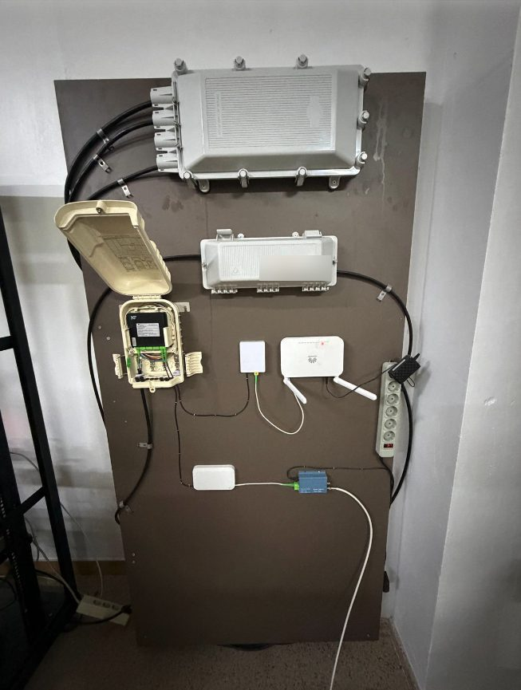
Los dos sentidos viajan por una sola fibra, separados por longitud de onda (multiplexación WDM, Wavelength Division Multiplexing). La bajada va a 1490 nm, la subida a 1310 nm y, cuando la red superpone vídeo de radiofrecuencia (RF), ese canal va a 1550 nm junto con la bajada. Si la televisión va por IP, la longitud de 1550 nm puede no usarse. La bajada es de difusión: el divisor copia la misma luz hacia todas las ONT y cada una se queda con sus datos. La subida usa acceso múltiple por división en el tiempo (TDMA, Time Division Multiple Access): la OLT concede un turno a cada ONT para que no emitan a la vez sobre la fibra que comparten.
Ejemplo 1. Recorrido de la señal¶
La OLT inyecta la bajada a 1490 nm en la fibra que sale de la central. En la caja de distribución, el divisor pasivo reparte esa luz entre varias fibras. Una de ellas llega a la caja final del edificio o de la calle, y desde ahí la acometida entra en el domicilio hasta la ONT. La ONT convierte la luz en internet, telefonía y televisión. A la vuelta, la ONT transmite a 1310 nm solo durante su turno; el mismo divisor junta las subidas y las devuelve a la OLT. El resto de salidas del divisor llevan la misma bajada a otros abonados.
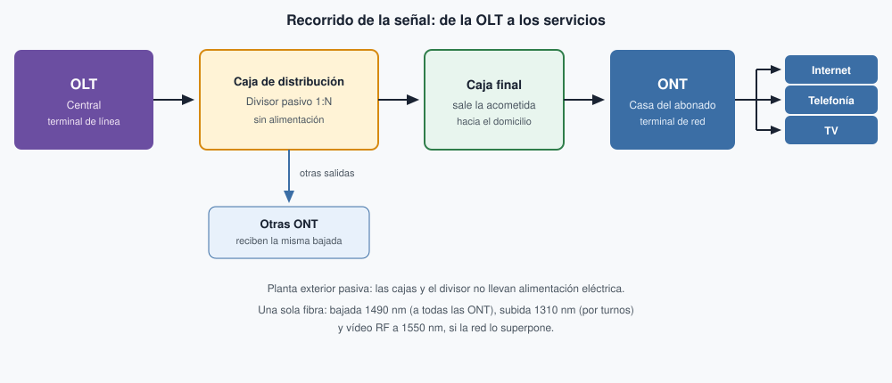
Ejemplo 2. Cálculo sencillo de pérdidas¶
Casi todo el margen se lo queda el divisor. En este ejemplo, la fibra, las fusiones y los conectores se cuentan con cifras orientativas de proyecto; el intervalo de la clase B+ sí lo fija la norma. Un divisor 1:32 se toma a 17 dB, valor típico de catálogo: solo repartir la luz entre 32 salidas ya ronda los 15 dB, y el divisor real añade un poco más. La fibra de planta se toma a 0,35 dB/km a 1310 nm, por debajo del máximo de 0,4 dB/km que la UIT-T G.652 asigna a la fibra monomodo de cable en esa longitud. Cada fusión bien hecha se cuenta a 0,1 dB y cada conector a 0,5 dB.
Se calcula la subida, a 1310 nm, porque ahí la fibra atenúa más que a 1490 nm. El enlace del ejemplo tiene 8 km, un solo divisor 1:32, cuatro fusiones y cuatro conectores:
| Concepto | Cálculo | Pérdida |
|---|---|---|
| Divisor óptico 1:32 | valor típico | 17 dB |
| Fibra de planta, 8 km a 1310 nm | 8 × 0,35 dB/km | 2,8 dB |
| 4 fusiones bien hechas | 4 × 0,1 dB | 0,4 dB |
| 4 conectores | 4 × 0,5 dB | 2,0 dB |
| Total | 22,2 dB |
La clase B+ admite entre 13 dB y 28 dB de pérdida, tanto a 1490 nm como a 1310 nm (UIT-T G.984.2, anexo A, tabla A.2). Por debajo de 13 dB llega demasiada potencia y el receptor puede saturarse; por encima de 28 dB la señal ya no basta. El total de 22,2 dB entra en ese intervalo: el enlace funciona. Hasta el máximo quedan 5,8 dB de margen (28 − 22,2).
Ese margen es el que se trabaja en el empalme por fusión. Si las cuatro fusiones quedaran en 1 dB en lugar de 0,1 dB, aportarían 4 dB en vez de 0,4 dB y el total pasaría a 25,8 dB. El enlace seguiría dentro, pero el margen bajaría a 2,2 dB. Unos empalmes defectuosos de más sacan el enlace de los 28 dB y la ONT deja de recibir nivel suficiente.
Errores frecuentes
Invertir bajada y subida: a 1490 nm la señal llega a todas las ONT; a 1310 nm cada ONT espera su turno. Tratar el divisor como un amplificador de coaxial: no se alimenta y no se ajusta. Sumar dos divisores cuando el reparto del ejemplo es uno solo. Dar por buena una fusión deficiente porque aún se mide algo de luz: cada décima de más sale del margen de 28 dB.
Empalme por fusión (visión de taller)¶
En fibra, el empalme por fusión une dos núcleos fundiéndolos con un arco eléctrico controlado (fusionadora). No es un crimpado de RJ‑45: un corte sucio o una fibra sucia deja el enlace inservible. En el taller se trabaja, por este orden, la preparación (pelado, limpieza, corte con cleaver), la fusión, el protector termorretráctil y una comprobación básica (continuidad o potencia, según el equipo).


En PRL hacen falta gafas, no mirar el haz y recoger los restos de fibra en un recipiente específico: pinchan y apenas se ven.
La práctica evaluable es PR304. El crimpado de cobre (conectores RJ‑45) ya se hizo en PR201 (CE3c); aquí el mismo criterio se aplica a la fibra.
Actividades¶
Formato de entrega
Las entregas en Aules son obligatorias en Markdown (.md). No se aceptan PDF.
Nombre del archivo: AC3XX.md o PR3XX.md (sustituye XX por el número). Respeta la fecha de vencimiento.
Escribiremos los .md con Visual Studio Code.
Cómo empezar
- Guía de Markdown: tutorialmarkdown.com/guia
- Documentación de Visual Studio Code: code.visualstudio.com/docs
AC301 — NIC comparativa¶
- AC301. (RA3 // CE3b // RA4 // CE4a // AC 0–1). Tabla comparativa de NIC (cableada / USB / Wi‑Fi): velocidades, dúplex, interfaz y uso típico. Incluye qué es la MAC.
AC302 — Armario / rack¶
- AC302. (RA2 // CE2f // AC 0–1). Documenta estructura del rack 19″, unidades U, elementos internos (panel, electrónica, PDU, guías) y tipos según tamaño.
AC303 — Electrónica y capas OSI¶
- AC303. (RA3 // CE3d // RA4 // CE4a, CE4b // AC 0–1). Tabla: hub, switch, router, gateway y AP — capa OSI, función, escenario de uso y una limitación de cada uno.
AC304 — Tomas, latiguillos y guiado¶
- AC304. (RA2 // CE2d, CE2e, CE2g, CE2i // AC 0–1). Tipos de TO, uso de latiguillos, canalizaciones/bandejas/guías/pasahilos y buenas prácticas de etiquetado.
AC305 — Propuesta electrónica (centro educativo)¶
- AC305. (RA3 // CE3a, CE3d // RA4 // CE4c // AC 0–1). Propón la electrónica para un centro con dos edificios: switches de armario, router de salida, gateway/firewall y AP interiores/exteriores. Diagrama en Excalidraw, draw.io o Dia + breve justificación en el
.md.
PR301 — Taller: panel, tomas, armario y switch¶
| Campo | Valor |
|---|---|
| Código | PR301 |
| UP / tema | T3 — Cableado estructurado |
| RA principal | RA2 (despliegue) + RA3 (interconexión). Apoyo RA4 |
| CE de cobertura | CE2d, CE2f, CE2g, CE2i, CE2j · CE3a, CE3d, CE3e, CE3f |
| Sesiones estimadas | 2 |
| Instrumento | Checklist de montaje + rúbrica 0–10 |
- PR301. En el aula-taller (no solo simulación): montad y conexionad un tramo didáctico de cableado estructurado.
Enunciado (qué hace el alumno):
- Preparar el armario / rack didáctico (orden, U libres, guiado, seguridad).
- Montar o completar panel de parcheo y, si el puesto lo permite, toma de usuario (TO) o equivalente didáctico.
- Instalar el switch en el armario (fijación, alimentación, etiquetado del equipo).
- Conexionar panel ↔ switch con latiguillos; etiquetar puertos según el plan del profesor.
- Verificar conectividad básica (enlace / ping entre dos puestos del tramo).
- Documentar el montaje (fotos + esquema de puertos).
Evidencia: fotos del rack (antes/después), etiquetado visible, checklist de montaje, prueba de conectividad, PR301.md.
Entrega: PR301.md + evidencias en Aules.
| Criterio (rúbrica) | Descripción | Puntos |
|---|---|---|
| Rack / panel / TO | Montaje ordenado y conforme al plan | 0–3 |
| Switch + conexionado | Equipo fijado y enlazado a paneles | 0–3 |
| Verificación | Conectividad demostrada | 0–2 |
Informe .md |
Fotos, etiquetado, incidencias | 0–2 |
| Total | /10 |
PR304 — Taller: fusión de fibra / fusionadoras¶
| Campo | Valor |
|---|---|
| Código | PR304 |
| UP / tema | T3 — Cableado estructurado |
| RA principal | RA3 (empalmes en fibra). Apoyo RA2 y RA6 |
| CE de cobertura | CE3c, CE3f, CE3g · CE2c, CE2j · CE6b, CE6e |
| Sesiones estimadas | 2 |
| Instrumento | Checklist de fusión + rúbrica 0–10 |
- PR304. En taller, bajo supervisión: realizad un empalme por fusión (o la secuencia completa de preparación + fusión + protector que permita el material del centro).
Enunciado (pasos):
- EPI y normas: gafas; no mirar fuentes ópticas; recoger restos de fibra.
- Preparar fibras (pelado, limpieza, corte con cleaver).
- Ejecutar la fusión en la fusionadora; anotar la atenuación estimada si el equipo la muestra.
- Colocar el protector termorretráctil y asentar el empalme.
- Comprobación básica según el equipo disponible (continuidad / potencia / OK de la fusionadora).
- Documentar errores típicos (corte malo, suciedad, protector mal colocado) y cómo se corrigieron.
Evidencia: foto del puesto/fusionadora, captura o lectura de resultado, checklist PRL, PR304.md.
Entrega: PR304.md + evidencias en Aules.
| Criterio (rúbrica) | Descripción | Puntos |
|---|---|---|
| PRL / EPI | Normas aplicadas y documentadas | 0–2 |
| Preparación y corte | Cleaver / limpieza correctos | 0–2 |
| Fusión + protector | Empalme válido / protector asentado | 0–3 |
| Comprobación + informe | Evidencia de OK + .md |
0–3 |
| Total | /10 |
PR305 — Taller: WLAN real¶
| Campo | Valor |
|---|---|
| Código | PR305 |
| UP / tema | T3 — Cableado estructurado |
| RA principal | RA4. Apoyo RA3 (CE3b) |
| CE de cobertura | CE4a, CE4b, CE4c, CE4d, CE4e, CE4f, CE4i · CE3b |
| Sesiones estimadas | 3 |
| Instrumento | Checklist de montaje + rúbrica 0–10 |
- PR305. En el aula-taller, por grupos: montáis una NIC (PCIe o USB Wi‑Fi) con su driver, instaláis un AP o router Wi‑Fi del centro y dejáis una WLAN usable.
Enunciado (pasos):
- EPI y, si montáis PCIe, apagad el PC y descargad electricidad estática.
- Instalar la NIC o el adaptador USB y el driver hasta que el sistema vea la interfaz (CE3b, CE4f).
- Cablear el AP al switch del puesto; alimentar por PoE o por el adaptador de corriente.
- Entrar a la configuración (web o app que indique el profesor).
- Configurar modo (AP; repetidor o cliente si se pide), SSID, canal/banda y WPA2 o WPA3 con la clave del puesto. Si el equipo lo tiene, red de invitados (CE4a–d, CE4i).
- Asociar portátil o móvil y comprobar ping o navegación (CE4e).
- Anotar canal e interferencias (analizador o lista de redes vecinas).
- Foto del montaje y captura de estado (SSID, canal, seguridad, IP).
Evidencia: fotos, capturas de config y de conectividad, PR305.md.
Entrega: PR305.md + evidencias en Aules.
No sustituye PR301 ni PR304. No se hace en Packet Tracer.
| Criterio (rúbrica) | Descripción | Puntos |
|---|---|---|
| Montaje NIC + driver | Adaptador instalado y reconocido | 0–2 |
| AP instalado y alimentado | Cableado / PoE correctos | 0–2 |
| Parámetros y seguridad | Modo, SSID, canal, WPA2/WPA3 | 0–3 |
| Conectividad | Cliente asociado y ping o web | 0–2 |
Informe .md |
Capturas, canal e incidencias | 0–1 |
| Total | /10 |
PR303 — Pasa a certificación: trabajo para casa¶
| Campo | Valor |
|---|---|
| Código | PR303 |
| UP / tema | T3 — Cableado estructurado |
| Dónde | Casa (certificación / +1). No ocupa sesiones de este tema |
| Instrumento | Checklist; se corrige solo si hace falta |
- PR303. Práctica de Packet Tracer de WLAN (AP, SSID, canal, seguridad básica). Guion: PR303 — WLAN en Packet Tracer. Entrega
PR303.pktyPR303.mdcuando lo pida el profesor. No puntúa en la nota de los RA (entra en el +1 de certificación). No sustituye a PR305.
PR302 — Proyecto aulario¶
| Campo | Valor |
|---|---|
| Código | PR302 |
| UP / tema | T3 — Cableado estructurado |
| RA principal | RA2. Apoyo RA3 |
| CE de cobertura | CE2d, CE2e, CE2f, CE2g, CE2i, CE2j · CE3a |
| Sesiones estimadas | 1–2 |
| Instrumento | Rúbrica de diseño 0–10 |
-
PR302. En grupo, diseñad el cableado del aulario (dos plantas, aulas, Wi‑Fi, enlace al edificio principal vía campus). El diseño debe ser coherente con el taller (PR301, PR304, PR305): rack, paneles, fusión/medios, electrónica y WLAN.
-
Plano funcional: zonas, FD/BD/CD, horizontal y backbone.
- Diagrama en Excalidraw / draw.io / Dia.
- Justificación de medios (cobre/fibra), canalizaciones y electrónica básica.
- Idea de etiquetado y crecimiento (reserva de puertos/cables).
Evidencia / entrega: PR302.md + diagrama (PNG/SVG o archivo del editor, según Aules). Exposición breve (~5 min) si se indica en clase.
| Criterio (rúbrica) | Descripción | Puntos |
|---|---|---|
| Análisis del escenario | Necesidades y condicionantes claros | 0–2 |
| Diseño del cableado | Elementos funcionales y normativa coherentes | 0–2 |
| Justificación técnica | Medios, canalizaciones y equipos argumentados | 0–2 |
| Etiquetado y mantenimiento | Identificación y plan básico de ampliación | 0–2 |
Documentación .md + diagrama |
Claridad y completitud | 0–2 |
| Total | /10 |
Para el examen¶
El cableado estructurado es el sistema del edificio (TO, horizontal de 90 m, panel, rack, backbone), no el latiguillo suelto. La NIC (Tema 1) se monta aquí (PCIe o USB) y lleva driver. El rack es de 19″ y la altura se mide en U. El panel empareja cada TO con un puerto etiquetado; de ahí un latiguillo al switch. El hub queda para laboratorio; el switch, para la LAN; el router o gateway, para otras redes; el AP, para Wi‑Fi con SSID, canal y WPA2/WPA3, a menudo con PoE. En fusión de fibra: cleaver, fusionadora, protector y PRL. En FTTH/GPON la OLT de la central llega a la ONT por divisores pasivos, con bajada a 1490 nm, subida a 1310 nm y vídeo RF a 1550 nm si se usa, y la pérdida del enlace tiene que caber en la clase B+ (13–28 dB). CE clave de este tema: CE2d, CE2f, CE2g, CE3a, CE3c, CE3f, CE4d, CE4i.
Autocheck del tema¶
Hazlo después de entregar el cuestionario inicial en Aules.
- V/F. El latiguillo del PC al switch de mesa ya es, por sí solo, un sistema de cableado estructurado.
- Empareja: TO · FD · CD con: (a) toma del puesto · (b) enlace entre edificios · (c) distribuidor de planta.
- El enlace permanente de cobre (TO ↔ panel) suele limitarse a…
a) 10 m · b) 55 m · c) 90 m · d) 300 m - V/F. Una NIC Wi‑Fi no tiene dirección MAC.
- Relaciona: hub · switch · router con capas 1, 2 y 3.
- Elige la correcta: PoE…
a) sube la categoría del UTP · b) alimenta equipos por el mismo par trenzado · c) solo existe en fibra - Nombra dos modos de funcionamiento de un AP.
- V/F. WEP es la seguridad recomendada hoy en el taller.
- ¿Qué distancia máxima se recomienda para el latiguillo equipo ↔ TO?
- El estándar que habla de etiquetado y administración del cableado es…
a) TIA‑568 · b) TIA‑606 · c) IEEE 802.11 · d) RFC 1918 - V/F. El repetidor divide el dominio de colisión.
- En la fusión de fibra, ¿para qué sirve el cleaver?
- V/F. El montaje de una NIC PCIe o USB cubre, entre otros, el criterio de instalar el adaptador en el equipo.
- Un canal Ethernet de cobre de 100 m se reparte, de forma habitual, en…
- ¿Qué compruebas en PR305 después de configurar SSID, canal y WPA2/WPA3?
- Empareja: OLT · ONT · divisor óptico con: (a) equipo en el domicilio, con internet, telefonía y TV · (b) equipo en la central · (c) reparte la luz y no se alimenta.
- Un enlace GPON suma 17 dB de un divisor 1:32, 2,8 dB de fibra, 0,4 dB de fusiones y 2,0 dB de conectores. ¿Cabe en el máximo de 28 dB de la clase B+? ¿Qué margen queda?
Soluciones
Las soluciones se publicarán aquí cuando cierre el cuestionario inicial en Aules.
Vídeos recomendados¶
Pablo Hidalgo explica cómo trabaja un switch Ethernet de capa 2 (CCNA v1.1, lección 6): tabla MAC, unicast y broadcast.
Las lecciones 34–38 de la misma playlist (CCNA Completo v1.1) tratan WLAN (transmisión, estándares, WLC, WPA2/WPA3) y requieren membresía. El cobre y la fibra (lecciones 3 y 4) están en el Tema 2.
Glosario¶
NIC Network Interface Card: adaptador de red. Concepto y MAC en el Tema 1; en este tema, montaje (PCIe/USB) y driver.
rack Armario de comunicaciones con bastidores de 19 pulgadas; la altura se mide en unidades U.
panel de parcheo Panel (habitualmente RJ‑45) que concentra el cableado horizontal y se etiqueta TO a TO.
TO Toma de usuario o TO (Telecommunications Outlet), también llamada roseta: punto de conexión del puesto (superficie, empotrable o de suelo).
FD Floor Distributor: distribuidor de planta.
BD Building Distributor: distribuidor de edificio.
CD Campus Distributor: distribuidor de campus (entre edificios).
AP Access Point: punto de acceso Wi‑Fi que puentea clientes inalámbricos hacia la LAN cableada.
PoE Power over Ethernet: alimentación eléctrica por el mismo UTP (AP, cámaras, teléfonos).
SSID Nombre de la red Wi‑Fi que anuncia el AP.
WPA2 / WPA3 Mecanismos de seguridad Wi‑Fi actuales (clave o 802.1X). WEP está obsoleto.
FTTH Fiber To The Home, fibra hasta el hogar: la fibra óptica llega al domicilio del abonado y termina en la ONT.
GPON Gigabit-capable Passive Optical Network, red óptica pasiva con capacidad de gigabit (UIT-T G.984): una OLT reparte la fibra entre varias ONT mediante divisores sin alimentación.
OLT Optical Line Terminal, terminal de línea óptica: equipo de la central. Origina la bajada y asigna los turnos de subida.
ONT Optical Network Terminal, terminal de red óptica: equipo en casa del abonado. Entrega internet, telefonía y televisión.
divisor óptico Repartidor pasivo (splitter): parte la potencia de una fibra entre varias salidas (1:8, 1:16, 1:32, 1:64…). No se alimenta y concentra la mayor parte de la pérdida del enlace.
Relación con el resto del módulo¶
El Tema 1 dio dispositivos, capas y la NIC; el Tema 2, el medio (UTP, fibra, Wi‑Fi, crimpado). Aquí se monta el edificio: rack, panel, TO y WLAN real (PR305). El Tema 4 profundiza en la trama y en el switch; el Tema 6, en VLAN sobre switch físico (PR604). La certificación (PR303 y el resto de Packet Tracer) se hace en casa.
Referencias rápidas¶
- Sitio del módulo: fjavier-hernandez.github.io/ral
- Diagramas: Excalidraw, draw.io (diagrams.net), Dia
- Simulación: Cisco Packet Tracer
- Entregas: Visual Studio Code + Markdown
- Normas: Normas del taller
- Playlist CCNA (Pablo Hidalgo): CCNA Completo v1.1
Normas del taller¶
Normas de uso del taller de SMR del IES Macià Abela.
1. Material y puesto asignado¶
- Eres responsable del material de tu puesto. Revísalo al inicio y al final de cada clase.
- Comunica de inmediato cualquier falta o avería al profesor.
- No intercambies herramientas entre puestos ni saques material del taller sin autorización.
2. Caja de herramientas¶
- Revisión obligatoria al entrar y al salir: número y estado de las herramientas.
- Cada herramienta en su sitio; caja cerrada al terminar.
- No usar herramientas de otros puestos.
3. Uso del equipo¶
- No modificar BIOS, particiones, cuentas ni configuraciones de red sin autorización.
- No instalar ni desinstalar software sin permiso del profesor.
- Apagar correctamente equipos, switches y routers al finalizar.
- Uso solo académico: prohibido jugar, redes sociales o software no autorizado.
4. Orden y limpieza¶
- Puesto limpio y ordenado: sin mochilas ni objetos personales sobre la mesa.
- Cableado recogido y ordenado; no pisar cables ni dejarlos sueltos.
- Al terminar: herramientas guardadas, rack cerrado, dispositivos apagados.
5. Comportamiento¶
- Puntualidad obligatoria.
- Prohibido comer o beber en el taller.
- Prohibido el uso del móvil salvo autorización expresa del profesor.
- No entra nadie ajeno al grupo autorizado.
6. Montaje de equipos (cuando aplique)¶
- Usar guantes antiestáticos ESD al manipular componentes.
- Desconectar siempre la alimentación antes de abrir la carcasa.
- No tocar conectores dorados ni circuitos; sujetar placas por los bordes.
- No forzar conectores; en caso de duda, avisar al profesor.
- Residuos electrónicos (RAEE) al contenedor indicado, no a la papelera.
7. Redes (cuando aplique)¶
- Usar solo cable y conectores proporcionados o autorizados.
- No modificar configuración de switches/routers sin autorización.
- Apagar dispositivos de red de forma ordenada al finalizar.
8. Seguridad¶
- No manipular conexiones eléctricas ni regletas sin autorización.
- Ante anomalía (olor, calor, chispas, humo): desconectar y avisar al profesor.
- Cualquier accidente o incidencia se comunica de inmediato al profesor.
El incumplimiento puede suponer medidas del Reglamento de Régimen Interno. Daños o pérdidas por uso indebido pueden requerir reposición.
Certificación
Certificación CCNA y el +1¶
En el módulo aprendes redes montando cable, armarios y switches reales en el taller. Esta página recoge la otra mitad del camino: la preparación de la certificación profesional CCNA de Cisco y el trabajo con Packet Tracer que la acompaña. Todo lo que hay aquí se hace en casa, a tu ritmo, y se apoya en lo que ya hemos visto en clase. No sustituye a las prácticas de taller ni a los exámenes, sino que los completa. Las prácticas de Packet Tracer no cuentan en la nota de los RA (resultados de aprendizaje); en su lugar, en clase hacemos prácticas de taller o de investigación con exposición. Lo que trabajes aquí, si lo haces con constancia, puede sumarte hasta un punto en la nota final del módulo.
Cómo usar esta página
Lee primero qué es el CCNA y cómo cuenta el +1. Si todavía no tienes Packet Tracer funcionando, empieza por la guía inicial. Después sigue el recorrido CCNA en el orden que propone: lección del curso, repaso del apartado de los apuntes y, cuando toca, práctica de Packet Tracer.
Qué es una certificación y por qué el CCNA¶
Una certificación es un examen oficial, organizado por un fabricante o por una entidad independiente, que acredita ante cualquier empresa que dominas unos conocimientos concretos. A diferencia del título de Técnico en Sistemas Microinformáticos y Redes, que acredita el ciclo completo, una certificación se centra en un área muy definida y la reconocen empresas de todo el mundo. En redes, las más conocidas son las de Cisco, el fabricante cuyos equipos y cuyo simulador, Packet Tracer, usamos en el módulo.
La certificación que seguimos es el CCNA (Cisco Certified Network Associate, asociado de redes certificado por Cisco), que se obtiene con un único examen, el 200-301. Es la certificación de redes más conocida del mercado y la que suelen pedir las ofertas de empleo de técnico de redes. Exige entender cómo viaja la información por una red, conectar y diagnosticar cables e interfaces, configurar switches y routers, trabajar con direcciones IP y subredes, y aplicar seguridad básica. Va más allá del currículo de 1.º de SMR, pero puedes seguir su recorrido desde ya: buena parte de lo que pide coincide con lo que vemos en el módulo. Quienes superen la auditoría de prácticas y destaquen tendrán la oportunidad de presentarse al examen oficial, y espero que lo hagan.
| CCNA (200-301) | |
|---|---|
| Nivel | Asociado: instalación, configuración y diagnóstico de redes |
| Requisitos previos | Ninguno (Cisco recomienda experiencia previa) |
| Duración del examen | 120 minutos |
| Precio en Cisco | 300 US$ (en euros, el que fije Pearson VUE) |
| Idiomas | Inglés y japonés |
| Validez | 3 años |
| Relación con RAL | Cubre buena parte de los Temas 1 a 9 y llega más lejos |
El CCNA cambia de versión en febrero de 2027
La versión actual del examen (v1.1) se puede hacer hasta el 2 de febrero de 2027. Desde el 3 de febrero de 2027 solo existe la v2.0, con el mismo código 200-301 y un temario renovado. Si piensas presentarte en algún momento del ciclo, lo harás con la v2.0; por eso el recorrido de esta página sigue el curso de Pablo Hidalgo preparado para esa versión.
El temario oficial de la v2.0 se organiza en cinco dominios, cada uno con su peso en el examen. Puedes consultarlo completo en la página de Cisco (temario del CCNA v2.0). La tabla siguiente relaciona esos dominios con los temas del módulo.
| Dominio del CCNA v2.0 | Qué pide, en resumen | Dónde lo vemos en RAL |
|---|---|---|
| 1. Infraestructura y conectividad (25 %) | Cables de cobre y fibra, interfaces, Wi‑Fi, direcciones IPv4 e IPv6, conectividad de los equipos | Tema 2 y Tema 3; direcciones en los Temas 5, 6 y 8 |
| 2. Conmutación y acceso a la red (25 %) | Switches, VLAN, enlaces troncales, alimentación por Ethernet o PoE, ping y traceroute |
Temas 3, 4 y 6; el primer ping se trabaja en PR103 |
| 3. Enrutamiento IP (20 %) | Tabla de rutas, rutas estáticas, OSPF | Tema 6 |
| 4. Servicios de red y seguridad (20 %) | DHCP, DNS, NAT, listas de acceso, seguridad de los puertos | Temas 8 y 9 |
| 5. IA, operación y gestión de la red (10 %) | Gestión y automatización de redes | Tema 9, en parte; el resto queda fuera del currículo de 1.º |
Los fundamentos del Tema 1 (tipos de red, topologías, modelos OSI y TCP/IP, encapsulación) no aparecen como dominio propio, pero son la base de todos: el curso de Pablo Hidalgo empieza por ellos.
El +1 en la nota final¶
La programación del módulo recoge hasta un punto extra en la nota final para quien completa este apartado de certificación. Funciona como un itinerario de formación de Cisco, pero dentro de nuestros apuntes: tú haces en casa las prácticas de Packet Tracer, las entregas en Aules y yo sigo tu avance desde allí. Este apartado explica qué tienes que hacer para conseguirlo y cómo se aplica, porque es fácil malinterpretarlo: no es una nota de un RA ni sirve para aprobar uno suspendido.
Las dos partes del +1. El punto se gana en dos mitades, y la segunda solo se suma si tienes la primera:
- 0,5 puntos por las prácticas. Entregas las prácticas de Packet Tracer de este apartado y superas la auditoría del profesor, en la que defiendes en clase lo que has hecho.
- 0,5 puntos más, hasta el punto entero, por el examen. Si, además, apruebas un examen de certificación, el +1 queda completo. Cómo se acredita ese examen para el +1 se concretará en Aules.
Cómo cuenta. Tu nota del módulo se calcula como se explica en la página de Inicio: primero la nota de cada RA a partir de sus actividades, y después la media ponderada de los seis RA. A esa nota final se le suma lo que hayas conseguido en este apartado (0,5 o 1 punto), y la nota puede llegar hasta 11. El +1 no sustituye ni compensa ningún RA: para aprobar el módulo sigues necesitando un 5 o más en cada uno de ellos. Unos ejemplos lo dejan claro. Si tu nota final es un 7,4 y has entregado y defendido las prácticas, el módulo queda en 7,9; si además has aprobado el examen de certificación, queda en 8,4. Con un 10 y el punto entero, la nota es un 11. En cambio, si tienes el RA4 con un 4, el módulo no está aprobado aunque hayas completado el apartado, porque el punto extra se suma a una nota final que ya exige todos los RA superados.
Qué tienes que hacer. La primera mitad se gana con trabajo constante a lo largo del curso, no con una entrega final. En concreto:
- Tener Packet Tracer instalado y la sesión iniciada, como se explica en Acceso a Packet Tracer.
- Seguir el recorrido CCNA: las lecciones del curso de Pablo Hidalgo y el repaso de los apuntes, que son la preparación para entender lo que haces en cada práctica.
- Completar las prácticas de Packet Tracer en el punto del recorrido en que aparecen y entregar en Aules, en su plazo, el fichero
.pkt(o.pka) y el informe.md. Todas las prácticas de Packet Tracer del módulo, por ejemplo PR303, cuentan solo para el +1. - Superar la auditoría de cada práctica en clase, con una explicación oral breve o una demostración: abres tu fichero, haces una comprobación (por ejemplo, un
pingo un vistazo al modo Simulación) y explicas lo que has hecho. Una práctica entregada pero no defendida no cuenta para el +1. La práctica opcional PR102 solo suma si la defiendes del mismo modo. - Para la segunda mitad, aprobar el examen de certificación y acreditarlo como se indique en Aules.
En Aules verás el seguimiento: qué prácticas has entregado, cuáles has defendido y cuáles te faltan. Las prácticas de este apartado se corrigen solo cuando hace falta; lo que de verdad cuenta es que las hagas tú y que sepas explicarlas en la auditoría.
Acceso a Packet Tracer¶
Packet Tracer es gratuito, pero Cisco pide una cuenta gratuita para descargarlo y para abrirlo: al arrancar el programa tienes que iniciar sesión con una cuenta de NetAcad (Cisco Networking Academy) o de Skills for All, que son las dos plataformas de formación de Cisco. No necesitas estar en ninguna clase ni pagar nada. Los pasos de descarga, instalación e inicio de sesión están en la guía inicial de Packet Tracer.
Prueba primero con tu correo @alu.edu.gva.es: es la opción recomendada, porque así todo lo del módulo queda en tu cuenta del centro. Si no consigues crear la cuenta con ese correo o el inicio de sesión falla, crea una cuenta personal gratuita de Cisco (en NetAcad o en Skills for All) con otro correo tuyo y úsala solo para Packet Tracer. En los dos casos, la entrega sigue siendo en Aules.
Si Packet Tracer te avisa de que no encuentra una cuenta asociada, Cisco indica que suele bastar con matricularte en su curso gratuito Getting Started with Cisco Packet Tracer, que es además el camino oficial para la descarga y aparece en la guía inicial (preguntas frecuentes de Cisco).
Cómo se trabaja: el curso de Pablo Hidalgo¶
El hilo conductor es el curso gratuito en español CCNA Recargado 2.0 de Pablo Hidalgo (lista de reproducción en YouTube), que prepara la versión 2.0 del CCNA. Son vídeos de seis a diez minutos que explican un concepto cada uno y, cada cierto número de lecciones, proponen un laboratorio de Packet Tracer. Ya conoces a este autor: sus vídeos aparecen en los Temas 1 y 2 y en la guía de Packet Tracer.
Algunas lecciones, sobre todo los laboratorios, están reservadas a los miembros de pago del canal. No las necesitas: en el recorrido se indican como opcionales, y las prácticas de esta página cubren ese trabajo. Cuando el curso nuevo todavía no ha llegado a un concepto, el recorrido remite a una lección pública del curso anterior del mismo autor, CCNA Completo v1.1 (lista de reproducción).
La forma de trabajar cada tramo es siempre la misma. Primero ves las lecciones. Después repasas el apartado de los apuntes que se indica, porque los apuntes son la referencia del módulo y el vídeo es un complemento. Por último, si el tramo tiene práctica, la haces en Packet Tracer y la entregas en Aules en Markdown (.md), junto con el fichero .pkt, igual que el resto de entregas del módulo.
Por qué el vídeo no basta
El curso de Pablo Hidalgo prepara el CCNA, que llega más lejos que nuestro currículo, y a veces nombra conceptos que el módulo trata en otro tema (direcciones IP, puertos, comandos de configuración). No te preocupes si algo no lo entiendes del todo: cada tramo indica el apartado de los apuntes que corresponde.
El recorrido CCNA¶
El recorrido sigue el orden del curso de Pablo Hidalgo, que es el orden en que el CCNA construye los conocimientos: primero los fundamentos, después la capa física y Packet Tracer, luego el Wi‑Fi y la capa de enlace. Las prácticas no van en el orden de los temas del módulo, sino en el punto del curso que corresponde a su nivel. Por eso PR202, que es del Tema 2, va antes que PR103, que es del Tema 1: conectar cables y módulos solo pide capa física, mientras que dar direcciones IP y comprobar con ping pide algo más. PR102, la más exigente, cierra el recorrido.
| Tramo | Lecciones (CCNA Recargado 2.0) | Repasa en los apuntes | Práctica |
|---|---|---|---|
| 1. Temario | Lección 1 | Esta página | — |
| 2. Fundamentos de redes | Lección 2, 3 y 4 | Tema 1: Sistemas en red, Topologías, PDU y encapsulación y Modelo OSI y modelo TCP/IP | — |
| 3. Capa física | Lección 5, 6, 7, 8, 9 y 10 | Tema 2: Cable directo y cruzado y Fibra óptica | — |
| 4. Packet Tracer | Lección 11; lecciones 12 y 13, laboratorios 1 y 2 (solo miembros, opcionales) | Guía inicial de Packet Tracer | PR202 |
| 5. Wi‑Fi | Lección 14 (solo miembros, opcional), 15 y 16 | Tema 2: Medios no guiados y Wi‑Fi básico; Tema 3: punto de acceso | PR303 |
| 6. Primera red con direcciones IP | Del curso v1.1: Lección 7 y 8 (IPv4 y su configuración en Windows) | Tema 1: Sistemas en red | PR103 |
| 7. Capa de enlace | Lección 17 y 18 | Tema 1: PDU y encapsulación; la capa de enlace se verá a fondo en el Tema 4 | PR102 (opcional) |
Las prácticas se hacen en casa, se entregan en Aules, se defienden en la auditoría y cuentan solo para el +1:
- PR202 — Conectar la capa física. Identificas puertos y módulos de un router y de varios switches, eliges el cable adecuado para cada enlace y compruebas el resultado. Corresponde al primer punto del dominio 1 del CCNA: interfaces y cables de cobre y fibra.
- PR303 — WLAN en Packet Tracer. Montas un AP, un switch, dos PC de cable y dos clientes Wi‑Fi; configuras SSID, canal y WPA2 y compruebas con
ping. Es el Wi‑Fi del Tema 3 en simulador. El taller real es PR305 y no va en este apartado. - PR103 — Mi primera red. Montas una LAN con un switch y cuatro PC, les das dirección IP y compruebas la conectividad con
pingy con el modo Simulación. Es el primer contacto con el diagnóstico de conectividad que pide el CCNA. - PR102 — Modelos OSI y TCP/IP (opcional). Observas la encapsulación de una petición web en el modo Simulación y localizas las direcciones MAC de la trama, que se explican en las lecciones 17 y 18. Los puertos, DNS y TCP que también aparecen se tratan en los Temas 7 y 9.
Cada guía enlaza con el enunciado de su tema, que sirve para revisar la práctica cuando haga falta; ninguna puntúa en la nota de los RA.
Autocheck de certificación¶
Estas preguntas siguen el estilo del CCNA, pero son propias del módulo. Son distintas del Autocheck de cada tema: aquí se mezclan conceptos de los Temas 1 y 2, como en el examen real.
- Un técnico conecta un PC a un switch con un latiguillo. ¿Qué tipo de cable usa, si no hay Auto‑MDIX, y en qué capa del modelo OSI trabaja el switch?
- V/F. La PDU (unidad de datos de protocolo) de la capa de enlace es el paquete.
- Ordena de menor a mayor alcance: WAN · PAN · LAN · MAN.
- Un edificio tiene un motor industrial junto al tendido de cobre. ¿Qué perturbación es la más probable y qué tipo de cable la reduce?
- Entre dos edificios separados por 250 m se quiere un enlace de 10 Gbps. ¿Cobre o fibra? Si es fibra, ¿multimodo o monomodo, y de qué clase?
- V/F. En un enlace full‑dúplex entre un PC y un switch no se producen colisiones.
- ¿Qué organismo publica la familia de estándares 802 y qué número corresponde a Ethernet y cuál al Wi‑Fi?
- Una red Wi‑Fi del aula funciona lenta y hay muchos puntos de acceso vecinos. ¿Qué banda conviene revisar primero y por qué?
- Elige la correcta: el conector de Ethernet sobre par trenzado es… a) RJ‑11 · b) RJ‑45 · c) BNC · d) LC
- Cuatro PC conectados a un hub, y el hub conectado a un switch con dos PC más. ¿Cuántos dominios de colisión y de difusión hay?
Soluciones
Las soluciones se publicarán aquí cuando cierre el bloque en Aules.
Cómo examinarse del CCNA (si decides hacerlo)¶
Presentarse al examen es voluntario. Si te animas, conviene que sepas cómo funciona. El CCNA lo gestiona Pearson VUE, la empresa que organiza los exámenes de Cisco, y se puede hacer en uno de sus centros autorizados o en línea desde casa, con vigilancia por cámara. El precio oficial es de 300 US$ y el examen dura 120 minutos. Ten en cuenta que no se ofrece en español, solo en inglés y en japonés. Antes de reservar, revisa en la página de Cisco (temario y datos del examen) las condiciones vigentes.
Si eres menor de edad, Cisco permite examinarse entre los 13 y los 17 años con el consentimiento de tu madre, padre o tutor legal, que debe firmar el acuerdo de certificación y confidencialidad de Cisco antes de reservar el examen; si te examinas en línea, además tiene que estar presente al inicio con su documento de identidad (política de Cisco sobre menores). Para preparar el examen no necesitas NetAcad; la cuenta solo es imprescindible para usar Packet Tracer.
Qué no usar¶
Webs de respuestas y preguntas «reales» de examen
Cisco prohíbe usar o difundir preguntas de sus exámenes: al examinarte aceptas un acuerdo de confidencialidad, y quien lo incumple puede perder las certificaciones que tenga y quedarse sin poder examinarse nunca más. Las respuestas de las actividades de NetAcad también son material protegido. Por eso en este módulo no se usan páginas que publican preguntas «recordadas» del examen o respuestas de NetAcad, como ExamTopics, ITExamAnswers, ccnadesdecero, ExamCollection, Exam-Labs, Test-King, Fast2Test o certprep.io, ni canales de vídeo que resuelven las actividades de NetAcad. Además del riesgo, no aprendes: el día del examen, o el día que tengas delante un switch real en una empresa, no habrá respuestas que copiar.
Glosario¶
certificación Examen oficial de un fabricante o entidad que acredita unos conocimientos concretos ante cualquier empresa.
CCNA Cisco Certified Network Associate: certificación de Cisco de nivel asociado en redes (examen 200-301).
NetAcad Cisco Networking Academy: plataforma formativa de Cisco. Desde ella, o desde Skills for All, se descarga Packet Tracer.
dominio Cada uno de los grandes bloques en que Cisco divide el temario de un examen.
auditoría Comprobación oral y breve en la que explicas una práctica que has entregado.
Cisco Packet Tracer — guía inicial¶
0. Qué es Packet Tracer y qué vas a necesitar¶
Packet Tracer es el simulador de redes de Cisco: montas topologías, configuras equipos y observas el tráfico sin cablear un rack. Es gratuito, pero para descargarlo y para abrirlo hace falta una cuenta en Cisco Networking Academy (NetAcad).
Requisitos del equipo
- Windows 11, macOS 12 o posterior, o Ubuntu 22.04 / 24.04.
- Procesador de 64 bits (amd64), unos 4 GB de RAM libres y 1,4 GB de disco.
- No existe versión para móvil ni tableta.
Tu correo: el de la identidad digital GVA, con dominio @alu.edu.gva.es. Con ese correo creas la cuenta NetAcad y entras en Packet Tracer.
1. Crear tu cuenta NetAcad¶
Entra en netacad.com y crea la cuenta tú mismo con tu correo @alu.edu.gva.es. El alta es libre: no necesitas código ni acceso previo del centro. Usa siempre ese correo; no uses Gmail ni otro correo personal.
Pulsa Inscríbase (o Sign up), confirma el correo si te lo pide y guarda usuario y contraseña en un sitio seguro.
2. Matricularte en «Getting Started with Cisco Packet Tracer»¶
El curso gratuito Getting Started with Cisco Packet Tracer (unas 2 horas) es el camino oficial para acceder a la descarga. Ábrelo aquí:
https://www.netacad.com/courses/getting-started-cisco-packet-tracer
En español verás el título Introducción a Cisco Packet Tracer. Elige el idioma y pulsa el botón para empezar (por ejemplo Get Started With Self-Paced).
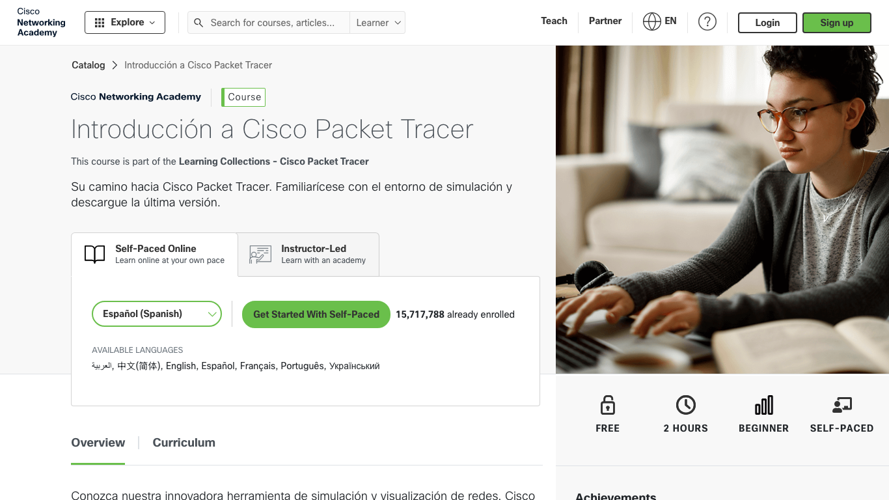
En el taller no hace falta terminar el curso entero para abrir Packet Tracer si ya está instalado; en casa sí necesitas esta matrícula (y la sesión iniciada) para poder descargar el instalador.
3. Descargar Packet Tracer¶
Ve al Resource Hub de descargas:
https://www.netacad.com/resources/lab-downloads
Sin sesión iniciada aparece el aviso Please login to download resources (o similar en español) y no puedes descargar. Inicia sesión en NetAcad y vuelve a esta página. Elige la versión de tu sistema (Windows, Ubuntu o macOS). La versión que veas hoy puede cambiar; descarga la que ofrezca NetAcad en ese momento.
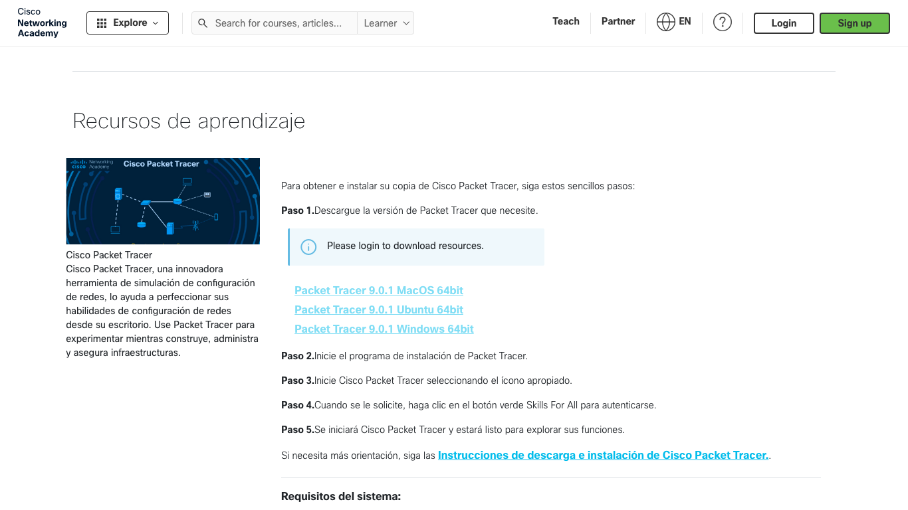
Los pasos 2 y 3 solo hacen falta para instalar Packet Tracer en tu ordenador de casa. En el aula ya está instalado: pasa al apartado 5.
4. Instalar¶
En los ordenadores del taller Packet Tracer ya está instalado. No hace falta descargar ni instalar nada: abre el programa e inicia sesión (apartado 5).
- Ejecuta el instalador que has descargado.
- Acepta la licencia y pulsa Siguiente hasta terminar.
- Deja marcada la opción de abrir Packet Tracer al acabar, si aparece.
- Si Windows muestra el aviso del cortafuegos, permite el acceso en redes privadas.
En la carpeta de descargas:
sudo apt install ./CiscoPacketTracer_XXX_Ubuntu_64bit.deb
Sustituye XXX por la versión del archivo que hayas bajado. Acepta la licencia. Ábrelo desde el menú de aplicaciones o con el comando packettracer.
5. Primer inicio de sesión dentro de Packet Tracer¶
Al abrir Packet Tracer aparece la ventana de inicio de sesión. Pulsa el botón de login (según la versión pone Login o Skills For All): se abre el navegador.
- Si ya tenías la sesión de NetAcad abierta, verás un mensaje del tipo You have successfully logged in to Cisco Packet Tracer: cierra esa pestaña y vuelve al programa.
- Si no, entra con tu cuenta GVA (
@alu.edu.gva.es).
Marca Keep me logged in solo en tu ordenador personal. En el del aula, no: son equipos compartidos.
6. Abrir, guardar y entregar un .pkt¶
- Abrir: Archivo > Abrir (File > Open) o doble clic en un
.pktdescargado de Aules. - Guardar: Archivo > Guardar como (File > Save As) con el nombre que pida la práctica (por ejemplo
PR1XX.pkt).
.pkt es una red normal que montas o modificas. .pka es una actividad con ventana de instrucciones y porcentaje de completado.
Cuando la práctica lo pida, sube a Aules el .pkt junto al informe en Markdown (.md).
7. Problemas frecuentes¶
| Síntoma | Qué hacer |
|---|---|
| No veo los botones o enlaces de descarga | No has iniciado sesión en netacad.com. Entra y recarga la página de descargas. |
| El login de Packet Tracer se queda cargando | Entra antes en NetAcad desde el navegador y vuelve a intentarlo. Prueba con Chrome o borra la caché de los sitios de Cisco. |
| No me llega el correo de confirmación de NetAcad | Mira en correo no deseado de tu cuenta GVA. |
Un .pkt no abre o avisa de la versión |
Se guardó con una versión más nueva; actualiza Packet Tracer desde el Resource Hub. |
| Aviso del cortafuegos de Windows | Permitir el acceso en redes privadas. |
| Quiero instalarlo en el móvil o en la tableta | No existe esa versión. |
8. Vídeo de apoyo¶
Pablo Hidalgo enseña en 7 minutos cómo crear la cuenta, descargar Packet Tracer, instalarlo e iniciar sesión. Cuando propone entrar con Google, tú usa tu cuenta @alu.edu.gva.es.
9. Comprobación¶
- Cuenta GVA (
@alu.edu.gva.es) creada en NetAcad - Sesión iniciada dentro de Packet Tracer
- Un
.pktguardado con el nombre de la práctica - En casa (opcional): matrícula en Getting Started y Packet Tracer instalado
Cuando termines, vuelve a las actividades del Tema 1.
PR202 — Conectar la capa física¶
Enunciado corto y rúbrica en el Tema 2.
En esta práctica abres una actividad oficial de Packet Tracer y trabajas la capa física: identificas puertos y módulos de un router y de varios switches, añades los módulos que faltan (con el equipo apagado), eliges el cable correcto para cada enlace (cobre directo, cobre cruzado o fibra) y compruebas que todo queda bien conectado. La comprobación la haces con el estado de las interfaces (show ip interface brief), con el navegador del portátil y con la puntuación de la actividad (sobre 55 puntos).
Esta práctica es del CCNA
Es una actividad del curso oficial Introduction to Networks del CCNA (Cisco Certified Network Associate). Lo que trabajas aquí (puertos, módulos y tipos de cable) entra en el primer dominio del examen CCNA: interfaces y cables de cobre y fibra.
Qué necesitas¶
- Packet Tracer con la sesión iniciada. Si aún no lo tienes listo, sigue la guía inicial.
- El fichero
PR202.pkade Aules (actividad Packet Tracer con puntuación).
Sesión iniciada
Si abres el .pka sin sesión iniciada en Packet Tracer, la puntuación de la actividad no se guarda. Entra primero con tu cuenta @alu.edu.gva.es y después abre el archivo.
Puedes ver el vídeo siguiente como apoyo, pero las respuestas del informe las sacas tú del equipo en Packet Tracer.
Avisos sobre el vídeo
La versión del vídeo puede diferir un poco de tu .pka. Para cableado e interfaces, manda la tabla de esta guía.
Si Packet Tracer o NetAcad te pide iniciar sesión, usa tu cuenta @alu.edu.gva.es, no Google.
Parte 1 — Identificar las características físicas¶
- Abre
PR202.pka. En la topología verás los routers Este y West, los switches Switch1–Switch4, los PC PC1–PC9, un punto de acceso, un portátil y una TabletPC. West queda al otro extremo del enlace serie que conectarás con Este. - Haz clic en el router Este. La pestaña Physical (Capa física) debe estar activa. Amplía la ventana para ver el chasis completo.
- Localiza los puertos de administración (consola, AUX…) y las interfaces LAN (red de área local, Local Area Network) y WAN (red de área amplia, Wide Area Network) que trae de fábrica. Anota cuántas hay de cada tipo.
- Abre la pestaña CLI (interfaz de línea de comandos, Command Line Interface). Es la primera vez que usas la consola del equipo en RAL: escribes comandos y lees la respuesta del dispositivo. Pulsa Intro para llegar al modo usuario y escribe:
Este> show ip interface brief
Este comando lista las interfaces del equipo, su dirección IP (si la tiene) y si están activas (up) o no (down). Lo usas para comprobar cuántas interfaces físicas aparecen y su estado.
- Anota cuántas interfaces físicas enumera (la interfaz
Vlan1es virtual: solo existe en software). - Escribe:
Este> show interface gigabitethernet 0/0
Este comando muestra el detalle de una interfaz concreta (estado, ancho de banda, etc.). Busca el ancho de banda predeterminado de GigabitEthernet0/0.
- Repite con la interfaz serie:
Este> show interface serial 0/0/0
Anota el ancho de banda predeterminado de Serial0/0/0. En las interfaces serie ese valor lo usan los protocolos de enrutamiento para elegir rutas; no es el caudal real del enlace (ese lo negocia el proveedor).
- Sigue en la pestaña Physical del router Este y cuenta las ranuras de expansión vacías donde se pueden insertar módulos.
- Abre Switch2 (pestaña Physical) y cuenta también sus ranuras de expansión.
Parte 2 — Seleccionar e insertar módulos¶
- En el router Este, pestaña Physical, revisa la lista de Módulos a la izquierda. Haz clic en cada uno y lee la descripción de abajo: así sabes qué conectividad aporta (puertos FastEthernet, fibra, etc.).
- Necesitas conectar PC1, PC2 y PC3 al router Este sin comprar un switch nuevo. Elige el módulo que te permite conectar esos tres PC y anota cuántos hosts admite.
- En Switch2, identifica el módulo que permite una conexión óptica Gigabit hacia Switch3 (módulo de fibra / SFP, transceptor enchufable, Small Form-factor Pluggable, según lo que ofrezca el equipo en Packet Tracer).
Apaga el equipo antes de insertar módulos
En este modelo de router (y en los switches de la actividad) los módulos no se pueden cambiar en caliente. Si intentas insertar uno con el equipo encendido, Packet Tracer no lo acepta. Apaga el dispositivo con el interruptor de la pestaña Physical, inserta el módulo y vuelve a encenderlo.
- Apaga el router Este, arrastra el módulo elegido a una ranura vacía y enciéndelo de nuevo. Si te equivocas de módulo, arrástralo otra vez hasta su imagen en la esquina inferior derecha para quitarlo.
- Con el mismo procedimiento, inserta en Switch2 el módulo de fibra en la ranura vacía más a la derecha.
- En la CLI de Switch2, vuelve a usar
show ip interface briefpara ver en qué ranura ha quedado el módulo (aparecen las nuevas interfaces).
Parte 3 — Conectar los dispositivos¶
Para cada fila de la tabla: elige el tipo de cable, haz clic en el primer dispositivo y su interfaz, y después en el segundo dispositivo y su interfaz. Si el enlace es correcto, sube la puntuación de la actividad.
Regla de cable (cobre): entre dispositivos de tipos distintos (PC–switch, PC–router, router–switch) se usa cable directo. Entre dispositivos del mismo tipo (switch–switch, router–router) se usa cable cruzado. Los equipos actuales suelen detectar el cruce solos (Auto-MDIX, Automatic Medium-Dependent Interface Crossover), pero esta actividad puntúa el cable que pide la tabla: pon exactamente el que indica cada fila.
Luces de enlace
En esta actividad de Cisco las luces de enlace no están habilitadas. No te guíes por el color del enlace en el lienzo: comprueba con la puntuación y, en la Parte 4, con los comandos.
| Dispositivo | Interfaz | Cable | Dispositivo | Interfaz |
|---|---|---|---|---|
| Este | GigabitEthernet0/0 | Cobre directo | Switch1 | GigabitEthernet0/1 |
| Este | GigabitEthernet0/1 | Cobre directo | Switch4 | GigabitEthernet0/1 |
| Este | FastEthernet0/1/0 | Cobre directo | PC1 | FastEthernet0 |
| Este | FastEthernet0/1/1 | Cobre directo | PC2 | FastEthernet0 |
| Este | FastEthernet0/1/2 | Cobre directo | PC3 | FastEthernet0 |
| Switch1 | FastEthernet0/1 | Cobre directo | PC4 | FastEthernet0 |
| Switch1 | FastEthernet0/2 | Cobre directo | PC5 | FastEthernet0 |
| Switch1 | FastEthernet0/3 | Cobre directo | PC6 | FastEthernet0 |
| Switch4 | GigabitEthernet0/2 | Cobre cruzado | Switch3 | GigabitEthernet3/1 |
| Switch3 | GigabitEthernet5/1 | Fibra | Switch2 | GigabitEthernet5/1 |
| Switch2 | FastEthernet0/1 | Cobre directo | PC7 | FastEthernet0 |
| Switch2 | FastEthernet1/1 | Cobre directo | PC8 | FastEthernet0 |
| Switch2 | FastEthernet2/1 | Cobre directo | PC9 | FastEthernet0 |
| Switch2 | GigabitEthernet3/1 | Cobre directo | AccessPoint | Port 0 |
| Este | Serial0/0/0 | DCE serial (conectar primero a Este) | West | Serial0/0/0 |
Ejemplo: para unir Este con Switch1, elige cable de cobre directo, en Este la interfaz GigabitEthernet0/0 y en Switch1 GigabitEthernet0/1. La puntuación debería subir (por ejemplo a 4/55 en ese primer enlace).
Parte 4 — Comprobar la conectividad¶
- En la CLI del router Este, ejecuta otra vez
show ip interface brief. Si el cableado es correcto, el estado debe coincidir con esta referencia (Status y Protocol en up donde corresponda):
| Interface | IP-Address | OK? | Method | Status | Protocol |
|---|---|---|---|---|---|
| GigabitEthernet0/0 | 172.30.1.1 | YES | manual | up | up |
| GigabitEthernet0/1 | 172.31.1.1 | YES | manual | up | up |
| Serial0/0/0 | 10.10.10.1 | YES | manual | up | up |
| Serial0/0/1 | unassigned | YES | unset | down | down |
| FastEthernet0/1/0 | unassigned | YES | unset | up | up |
| FastEthernet0/1/1 | unassigned | YES | unset | up | up |
| FastEthernet0/1/2 | unassigned | YES | unset | up | up |
| FastEthernet0/1/3 | unassigned | YES | unset | down | down |
| Vlan1 | 172.29.1.1 | YES | manual | up | up |
- Abre el portátil → pestaña Config → interfaz Wireless0 → marca On en el estado del puerto. Espera a que aparezca la conexión inalámbrica.
- En Desktop del portátil, abre el navegador web, escribe
www.cisco.pkay pulsa Ir. Debe mostrarse la página Cisco Packet Tracer. - Repite el encendido de Wireless0 en la TabletPC y comprueba también
www.cisco.pkaen su navegador. - (Opcional de la actividad) En la TabletPC puedes apagar Wireless0 y activar 3G/4G Cell1 para probar acceso por red celular. No dejes las dos interfaces activas a la vez: solo debe haber una interfaz de red activa; si WiFi y celular compiten, el equipo puede usar una ruta de salida distinta y el navegador dejar de resolver bien el acceso.
- Pulsa Check Results. La puntuación debe llegar al 100 % (55/55). Guarda el
.pkacon Archivo > Guardar como / File > Save As comoPR202.pka.
Preguntas para PR202.md¶
Responde en tu informe (frases completas):
- ¿Qué puertos de administración tiene el router Este?
- ¿Qué interfaces LAN y WAN trae el router Este y cuántas hay de cada tipo?
- Según
show ip interface brief, ¿cuántas interfaces físicas enumera el router Este? - ¿Cuál es el ancho de banda predeterminado de
GigabitEthernet0/0? ¿Y el deSerial0/0/0? - ¿Cuántas ranuras de expansión tiene el router Este? ¿Y el Switch2?
- ¿Qué módulo usas para conectar PC1, PC2 y PC3 al router Este sin un switch nuevo? ¿Cuántos hosts permite ese módulo?
- ¿Qué módulo insertas en Switch2 para la conexión óptica Gigabit hacia Switch3? ¿En qué ranura queda?
- Resume con tus palabras cuándo usas cable directo, cuándo cruzado y cuándo fibra en esta actividad.
Entrega en Aules¶
Qué se entrega
Las preguntas que contestas y entregas son las de esta guía (apartado «Preguntas para PR202.md»). El fichero .pka sirve para montar y comprobar la red y guardar la puntuación de Packet Tracer; las preguntas internas del PKA no se entregan.
Sube PR202.pka (guardado con la puntuación) y PR202.md con:
- Captura de la pestaña Physical del router Este (o de Switch2) con los módulos ya insertados.
- Captura de la salida de
show ip interface briefen Este y en Switch2. - Captura del navegador del portátil mostrando
www.cisco.pka. - Captura de la ventana Check Results (puntuación completa).
- Las respuestas a las preguntas de arriba.
Sin nombres, correos ni datos personales en capturas ni en el .md.
Antes de entregar¶
- Sesión iniciada en Packet Tracer
- Módulos insertados con el equipo apagado
- Cableado según la tabla
-
show ip interface briefcoherente en Este - Portátil (y TabletPC) llegan a
www.cisco.pka - Check Results al 100 %
-
PR202.pkayPR202.mdlistos para Aules
Rúbrica¶
| Criterio | Descripción | Puntos |
|---|---|---|
| Identificación de puertos y módulos | Respuestas correctas sobre administración, LAN/WAN, ranuras y comandos show |
2 |
| Módulos insertados correctamente | Módulos adecuados en Este y Switch2, insertados con el equipo apagado | 2 |
| Cableado según la tabla | Todos los enlaces con el tipo de cable e interfaces indicados | 2 |
| Verificación | Comandos, navegador a www.cisco.pka, Check Results al 100 % |
2 |
| Entrega | .pka que abre bien y .md claro, respuestas correctas, sin datos personales |
2 |
| Total | /10 |
PR303 — WLAN en Packet Tracer¶
Enunciado corto en el Tema 3. El montaje real del aula es PR305; esta práctica no lo sustituye.
Vas a montar en Packet Tracer una WLAN (Wireless Local Area Network, red de área local inalámbrica) mínima: un AP (Access Point, punto de acceso) unido a un switch, dos PC por cable y dos clientes Wi‑Fi. Configuras el SSID (Service Set Identifier, nombre de la red), el canal y WPA2 (Wi‑Fi Protected Access 2, acceso Wi‑Fi protegido versión 2), asocias los clientes y compruebas con ping. No partimos de un archivo .pka ni .pkt del profesor: lo construyes tú desde cero, como en PR103.
Cuenta solo para el +1
PR303 se hace en casa, se entrega en Aules y se defiende en la auditoría. No puntúa en la nota de los RA (resultados de aprendizaje). No sustituye a PR305 (taller: NIC, AP o router Wi‑Fi del centro y WLAN usable).
Antes de empezar, Packet Tracer con la sesión iniciada. Si aún no lo tienes listo, sigue la guía inicial. Entra con tu cuenta @alu.edu.gva.es, no con Google.
Los modos del AP, el SSID, el canal y WPA2/WPA3 ya están en el Tema 3, punto de acceso. El medio Wi‑Fi (bandas 2,4 GHz y 5 GHz, interferencia) está en el Tema 2. Aquí solo montas y compruebas.
Vídeo de apoyo¶
Las lecciones de Wi‑Fi del curso CCNA Recargado 2.0 de Pablo Hidalgo que están abiertas sin membresía son la 15 y la 16. Sirven para el concepto (SSID, canal, seguridad). El laboratorio de Packet Tracer de ese curso (lección 14 y, en el curso v1.1, las lecciones 34–38) es de pago: no lo necesitas. El guion de esta página es el que cuentas en la auditoría.
Puedes ver la lección 15 como repaso; los clics de Packet Tracer los haces con los pasos de abajo.
Avisos sobre el vídeo
El vídeo nombra ideas del CCNA que el módulo trata más adelante. Para esta práctica basta con SSID, canal y WPA2.
Si Packet Tracer o NetAcad te pide iniciar sesión, usa tu cuenta @alu.edu.gva.es, no Google.
Qué necesitas¶
- Packet Tracer con la sesión iniciada (guía inicial).
- Un archivo nuevo, vacío: no hay
PR303.pkaen Aules. Montas la topología y la guardas comoPR303.pkt.
Parámetros de laboratorio¶
Usa estos valores, no el SSID ni la clave del centro.
| Parámetro | Valor de laboratorio |
|---|---|
| SSID | RAL-LAB-WLAN |
| Banda / canal | 2,4 GHz · canal 6 |
| Seguridad | WPA2-PSK (clave precompartida), cifrado AES si el equipo lo deja elegir |
| Frase de paso | LabNet-2026! |
| Red | 192.168.10.0 / máscara 255.255.255.0 |
| Puerta de enlace | vacía (no hay router) |
| Equipo | Dirección IP | Máscara |
|---|---|---|
| PC1 (cable) | 192.168.10.10 | 255.255.255.0 |
| PC2 (cable) | 192.168.10.11 | 255.255.255.0 |
| LT1 (Wi‑Fi) | 192.168.10.20 | 255.255.255.0 |
| LT2 (Wi‑Fi) | 192.168.10.21 | 255.255.255.0 |
El AP de Packet Tracer (Access Point-PT) es un puente de capa 2: no le pongas IP. Une el aire con el cable, igual que el AP del taller cuando trabaja en modo infraestructura.
Pasos¶
1. Colocar los equipos¶
- En Network Devices > Switches, un switch 2960. Nombre SW1 (Config > Display Name).
- En Wireless Devices, un Access Point-PT. Nombre AP1.
- En End Devices, dos PC (PC1, PC2) y dos portátiles (LT1, LT2).
2. Cablear el tramo de cobre¶
Con cable automático o directo:
- AP1, interfaz Port 0, a SW1 Fa0/1.
- PC1 a SW1 Fa0/2.
- PC2 a SW1 Fa0/3.
Espera a que los tres enlaces queden en verde. El AP se alimenta en Packet Tracer al conectarlo: no hace falta simular PoE (Power over Ethernet, alimentación por Ethernet) para esta práctica.
3. Módulo Wi‑Fi en los portátiles¶
El portátil de Packet Tracer sale de fábrica con tarjeta Ethernet. Para asociarse al AP hay que ponerle una NIC inalámbrica, con el equipo apagado (la misma precaución que al insertar módulos en PR202).
En LT1:
- Pestaña Physical. Apaga el portátil con el interruptor.
- Arrastra el módulo FastEthernet (el de la ranura lateral) hasta la lista de módulos, para quitarlo.
- Arrastra el módulo WPC300N (o el adaptador inalámbrico que ofrezca tu versión) a esa ranura.
- Enciende el portátil.
Repite en LT2. Si dejas Ethernet y Wi‑Fi a la vez, el ping puede salir por el cable y la práctica no demuestra la WLAN.
4. Configurar el AP¶
Clic en AP1 → pestaña Config → interfaz inalámbrica (Port 1 en Access Point-PT):
- SSID:
RAL-LAB-WLAN. - Channel:
6. - Authentication:
WPA2-PSK. Si aparece el tipo de cifrado, elige AES. - PSK Pass Phrase (o equivalente):
LabNet-2026!.
No dejes el AP abierto ni uses WEP: en el módulo la seguridad de aula es WPA2 o WPA3, como se indica en el Tema 3. Si tu versión de Packet Tracer ofrece WPA3, puedes usarlo con la misma frase; en el informe anota cuál has dejado.
5. Direcciones IP en los PC de cable¶
En PC1 y PC2: Desktop > IP Configuration, modo Static, según la tabla. Gateway y DNS en blanco.
Comprueba primero el tramo cableado: en PC1, Command Prompt:
ping 192.168.10.11
Si ese ping falla, no pases al Wi‑Fi: el fallo está en el switch, en el cable o en las IP.
6. Asociar los portátiles¶
En LT1: Desktop > PC Wireless (o Config > Wireless0, según la versión).
- Pestaña Connect. Pulsa Refresh / Actualizar.
- Elige la red
RAL-LAB-WLAN. - Introduce la frase
LabNet-2026!y conéctate. - Cuando el estado sea asociado (Connected / conectado), ve a Desktop > IP Configuration y pon 192.168.10.20 / 255.255.255.0, puerta de enlace vacía.
Repite en LT2 con 192.168.10.21.
Si no aparece el SSID: revisa el módulo WPC300N, que el portátil esté encendido y que el SSID del AP coincida carácter a carácter (mayúsculas incluidas).
7. Comprobar la WLAN¶
Desde LT1, Command Prompt:
ping 192.168.10.10
ping 192.168.10.11
ping 192.168.10.21
Los tres deben responder. El primero demuestra que el cliente Wi‑Fi llega al PC de cable a través del AP y del switch. El último, que los dos clientes inalámbricos se ven entre sí.
Opcional: modo Simulación, filtro ICMP, PDU simple de LT1 a PC1, y avanza hasta la respuesta. No es obligatorio para la entrega.
8. Guardar¶
Archivo > Guardar como / File > Save As → PR303.pkt. Si dudas del menú, mira abrir y guardar.
Entrega en Aules¶
Sube PR303.pkt y PR303.md con:
- Captura de la config del AP (SSID, canal, WPA2 o WPA3; sin la frase de paso del centro: aquí solo la de laboratorio).
- Captura de un portátil asociado a
RAL-LAB-WLAN. - Captura del
pingde LT1 a PC1 (solo la ventana Command Prompt). - Respuestas a:
1. ¿Qué hace el AP en esta topología respecto al switch y a los clientes Wi‑Fi?
2. ¿Por qué el AP no lleva dirección IP en esta práctica?
3. ¿Qué ocurriría si el portátil se asociara al SSID pero tuviera una IP de otra red (por ejemplo
192.168.20.20)?
Sin nombres, correos ni SSID reales del centro en capturas ni en el .md.
Antes de entregar¶
- Packet Tracer con sesión iniciada (
@alu.edu.gva.es) - SW1, AP1, PC1, PC2, LT1 y LT2; enlaces de cobre en verde
- Módulo inalámbrico en LT1 y LT2 (Ethernet quitado)
- SSID
RAL-LAB-WLAN, canal 6, WPA2-PSK (o WPA3), frase de laboratorio - IP según la tabla; ping de LT1 a PC1 y a LT2
-
PR303.pktyPR303.mdlistos para Aules
PR103 — Mi primera red en Packet Tracer¶
Enunciado corto y rúbrica en el Tema 1.
Vas a montar tu primera red local: un switch y cuatro ordenadores, les das dirección IP y compruebas que se comunican. No partimos de un archivo .pkt del profesor: lo construyes tú desde cero. Antes necesitas Packet Tracer con la sesión iniciada; si aún no lo tienes listo, sigue la guía inicial.
Vídeo 1 — Paso a paso¶
Mira del 1:23 al 10:04. Él monta dos PC; tú montarás cuatro, con el mismo método.
Avisos sobre el vídeo
En el vídeo pone la IP en Config > FastEthernet0. Aquí lo haces en Desktop > IP Configuration; el resultado es el mismo.
Deja puerta de enlace y DNS en blanco: sin router no hacen falta.
Si Packet Tracer o NetAcad te pide iniciar sesión, usa tu cuenta @alu.edu.gva.es, no Google.
Pasos¶
- Coloca un switch 2960 y cuatro PC (End Devices).
- Conéctalos con cable automático o directo: PC1 a Fa0/1, PC2 a Fa0/2, PC3 a Fa0/3, PC4 a Fa0/4.
- Cambia los nombres a PC1, PC2, PC3, PC4 y SW1 (pestaña Config > Display Name).
- Pon las IP en Desktop > IP Configuration, modo Static, según esta tabla:
| Equipo | Dirección IP | Máscara | Puerta de enlace |
|---|---|---|---|
| PC1 | 192.168.1.10 | 255.255.255.0 | (vacía) |
| PC2 | 192.168.1.11 | 255.255.255.0 | (vacía) |
| PC3 | 192.168.1.12 | 255.255.255.0 | (vacía) |
| PC4 | 192.168.1.13 | 255.255.255.0 | (vacía) |
- Espera a que los enlaces se pongan en verde. En PC1, Desktop > Command Prompt: escribe
ipconfigy despuésping 192.168.1.11,ping 192.168.1.12yping 192.168.1.13. - Pasa a modo Simulación. Mira solo del 9:50 al 14:00 del vídeo siguiente (lo de antes usa otro cableado y no lo necesitas). Deja el filtro solo en ICMP, envía una PDU simple de PC1 a PC4 y avanza paso a paso hasta que vuelva la respuesta.
- Guarda el archivo como
PR103.pkt(Archivo > Guardar como / File > Save As). Si dudas del menú, mira el apartado de abrir y guardar en la guía inicial.
Entrega en Aules¶
Sube PR103.pkt y PR103.md con:
- Captura del ping de PC1 a PC4 (solo la ventana Command Prompt).
- Captura del modo Simulación con la Event List.
- Respuestas a:
1. ¿Qué topología forman los equipos y qué hace el switch?
2. ¿Qué cable has usado y por qué?
3. (Opcional) Cambia la IP de PC4 a
192.168.2.13y vuelve a hacer ping desde PC1. ¿Qué pasa? ¿Por qué crees que ocurre?
Antes de entregar¶
- Packet Tracer con sesión iniciada
- Switch y cuatro PC cableados, enlaces en verde, nombres PC1–PC4 y SW1
- IP según la tabla (sin puerta de enlace)
- Ping de PC1 al resto
- PDU ICMP en Simulación de PC1 a PC4 (ida y vuelta)
-
PR103.pktyPR103.mdlistos para Aules
PR102 — Modelos OSI y TCP/IP en Packet Tracer¶
Práctica opcional
PR102 es voluntaria. Trabaja conceptos (puertos, DNS, ARP, TCP) que veremos en profundidad en temas posteriores, así que es normal que ahora te cueste. Si la entregas, suma para el +1 de la nota final, pero solo cuenta si la defiendes en una auditoría: una comprobación oral en la que explicas lo que has hecho, cuando el profesor lo indique.
Enunciado corto y rúbrica en el Tema 1.
Objetivos¶
- Relacionar capas OSI y TCP/IP con lo que muestra Packet Tracer.
- Observar encapsulación en una petición web (HTTP sobre TCP/IP/Ethernet).
- Identificar tráfico DNS, ARP y TCP además de HTTP.
Requisitos¶
- Guía inicial Packet Tracer (instalación e interfaz).
- Cisco Packet Tracer instalado.
- Topología
.pktde Aules o la mini-topología de la sección siguiente.
Si no tienes el archivo¶
Monta una LAN mínima:
- 1× PC (cliente), 1× Server-PT, 1× Switch 2960.
- Cables rectos PC—switch y server—switch.
- En el servidor: IP
192.168.1.254/24, servicio HTTP y DNS activos; registro Awww.osi.local→192.168.1.254. - En el PC: IP
192.168.1.10/24, DNS192.168.1.254, sin puerta de enlace (todo está en la misma LAN).
Parte 1 — Tráfico HTTP¶
- Abre la topología. Pasa a modo Simulación.
- Editar filtros → desactiva todo y deja solo HTTP.
- En el PC → Escritorio → Navegador web → URL
www.osi.local→ Ir. - Pulsa Capturar/Avanzar varias veces hasta ver eventos HTTP.
- Abre el primer evento HTTP → pestaña Modelo OSI: - Capa 7: petición HTTP al servidor. - Capa 4: puerto destino 80. - Capa 3: IP destino del servidor. - Capa 2: MAC origen/destino.
- En Detalles PDU: anota IP origen/destino, puertos TCP y host HTTP.
Parte 2 — DNS, ARP y TCP¶
- En filtros, Mostrar todo (o activa DNS, ARP, TCP, HTTP).
- Localiza un evento DNS (consulta del nombre) y la respuesta (IP resuelta).
- Localiza ARP si aparece (resolución MAC).
- Localiza eventos TCP (apertura / ESTABLISHED / cierre).
Qué entregar (PR102.md + capturas)¶
En el .md:
- Captura modo Simulación con eventos visibles (HTTP y al menos DNS o TCP).
- Tabla breve: capa (OSI o TCP/IP) | qué viste en esa capa en la PDU HTTP.
- Respuestas (una o dos frases cada una): - ¿Qué puerto escucha el servidor web para HTTP? - ¿Qué puerto usa DNS? - En la respuesta del servidor, ¿qué se intercambia respecto a IP/MAC/puertos?
- (Opcional) Archivo
.pktsi lo modificasteis.
Valoración: rúbrica del Tema 1. Solo suma para el +1 si la defiendes en la auditoría.